(2006-06-07 18:08:15)
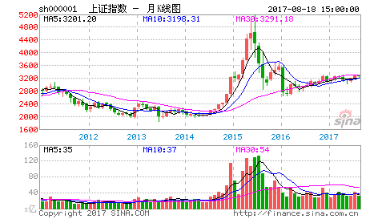
教你炒股票1：不会赢钱的经济人，只是废人！
【韶山映山红】原文配图是SH000001上证指数的月K线图，新浪博客自动更新为当下的新图，这里贴上当时的月K线图，以69课月线顶底分型画笔为背景。】
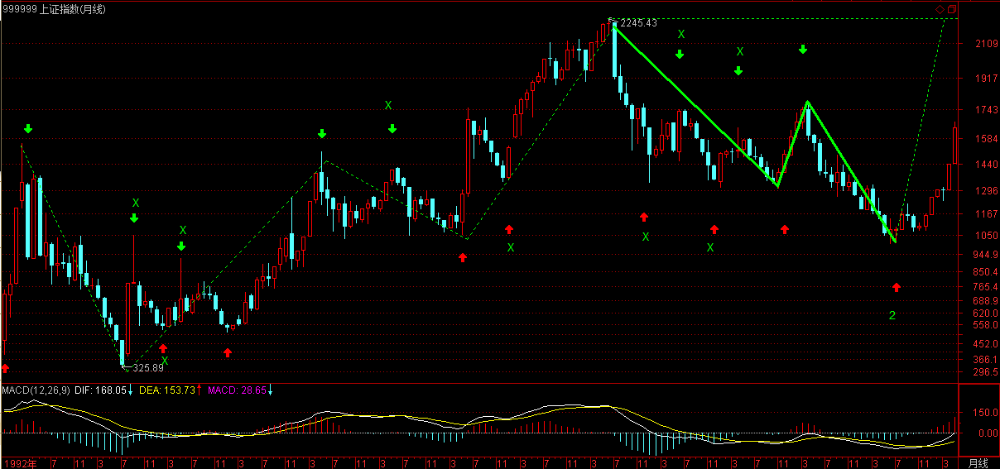
【韶山映山红】桃花博客配图。】
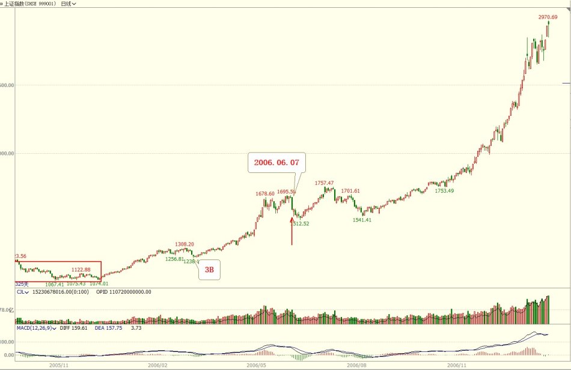
“教你炒股票”这样的题目，全中国不会有第二人比本ID更适合写的。【韶山映山红】作为本土创建的证券理论，毕竟还是建立在前人的积累之上，所以缠师在这里挑明了是“全中国”。《自然哲学的数学原理》带来划时代的科学革命，缠师眼里的“市场哲学的数学原理”自然也一样的无与伦比。】
当然，股票是炒出来的，不是写出来的，因此也从未想过写这样的题目。【韶山映山红】走势是市场合力的结果，是炒出来的，任何理论都只是对走势的分析，不可能指挥走势，也就不可能有任何真正的预测。】
但任何事情都是有缘起的，缘分到了，也不妨写上一写。【韶山映山红】缘起，重要佛教术语，一切有为法都是因各种因缘而成，此理即为缘起。任何事物都因为各种条件的相互依存而处在变化中，这是佛陀对世间现象的成住坏灭之原因、条件所证悟的法则。 因为现观它能导致利益和快乐，所以值得智者们了解它，故为“缘”；生起时是一起和完全生起，而非单独，也非无因，故为“起”。如此，由缘和生起为“缘起”。 历史永远是巧合，没有必然。缠论的留存也不例外。】
【韶山映山红】东学熹用（柏熹）：最赚钱的生意离不开三种，帮人赚钱（直接），教人赚钱（间接），启发人的财富观。可按照经济学的逻辑，这是最不划算的生意，因为没有经济价值。这样就导致了这个行业里会的往往不说，说的却常常不会。这个从各大畅销榜以及网页广告中可以略见一斑。】
【韶山映山红】2006-06-07星期三。本文发表的当日，低开、收长阴，-5.33%。】
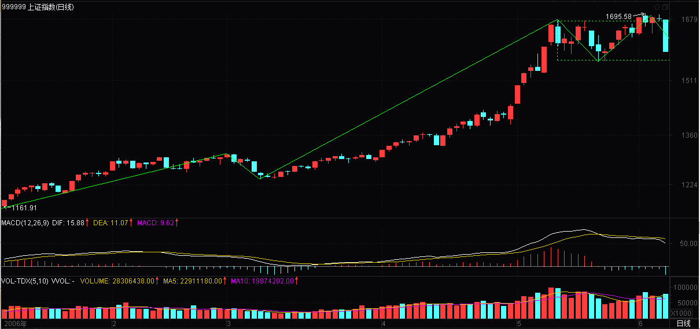
【韶山映山红】当日是998转折以来的最大日跌幅。】
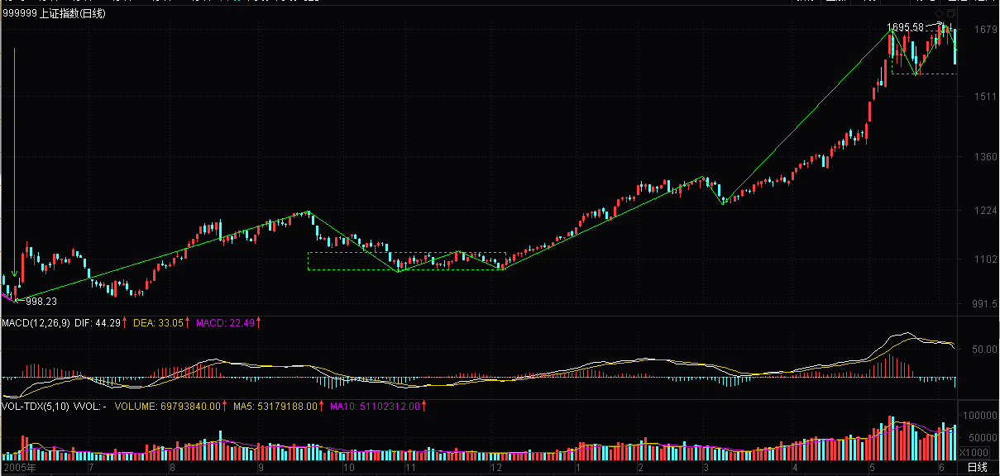
【韶山映山红】30分钟近景图。】
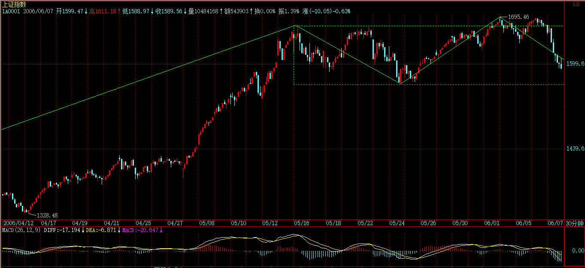
人，总是很奇怪的，就算是很聪明的人，或者在其他行业很成功的人，一旦进入资本市场，就像换了人。【韶山映山红】“聪明”在资本市场没有用，有用的特质是“智慧、秉性、天赋、勤奋”。“在其他行业很成功的人”过去的经验不适用了，见路不走。聪明、成功都没有用，过去的优势因为不适用而黯淡，资本市场放大了人性的弱点，需要的是围绕贪嗔痴疑慢的修行。】
【韶山映山红】扫地僧：聪明和智慧不是一回事，在资本市场里，人性是被放大的，贪婪和恐惧会被无限放大，要想克服人性的缺点只有靠智慧，而不是聪明，没有智慧的聪明更加放大人性的缺点。所以，这和在其他行业是否成功没有对应关系，如果在其他行业是靠智慧的聪明获得成功，那么在资本市场里应该也不会太差，而如果只是靠聪明获得成功，那一旦进入资本市场，人性突然被放大，自然就像换了人 】
【韶山映山红】桃花：（人性在市场被放大）】
【韶山映山红】静姐01-01】
虚拟和现实的鸿沟使得干实业的，且不说期货了，就算到风险小多的股市，也很少能干好的。【韶山映山红】股市是放大器，期货还要加杠杆，风险更大。】
【韶山映山红】虚拟经济是相对实体经济而言的，是金融深化的必然产物。经济的本质是一套价值系统，包括物质价格系统和资产价格系统。与由成本和技术支撑定价的物质价格系统不同，资产价格系统是以资本化定价方式为基础的一套特定的价格体系，这也就是虚拟经济。由于资本化定价，人们的心理因素会对虚拟经济产生重要的影响；这也就是说，虚拟经济在运行上具有内在的波动性。 虚拟经济是市场经济高度发达的产物，以服务于实体经济为最终目的。随着虚拟经济迅速发展，其规模已超过实体经济，成为与实体经济相对独立的经济范畴。与实体经济相比，虚拟经济具有明显不同的特征。概括起来，主要表现为高度流动性、不稳定性、高风险性和高投机性四个方面。】
而习惯在虚拟市场玩游戏的，基本很难回头去弄实业，这些例子都太多了。【韶山映山红】资本市场看上去钱来得容易，实际上亏得更快，贪婪加恐惧，激发了人的赌性，成瘾，自然再无心做苦哈哈的实业。】
【韶山映山红】扫地僧：做实业要拼关系、拼人脉、拼资源、拼质量、拼速度、拼酒量、拼颜值。。。。。。各种拼，累死累活一年10%的利润，还不是复利，资本市场里10%的机会天天有，只用舒服得吹着空调点着鼠标几秒钟搞定，不用求爷爷告奶奶，这也是绝大多数想职业炒股者的想法 】
【韶山映山红】桃花：（交易风险一个人能控制，实业风险不是一个人能控制的）】
【韶山映山红】静姐01-02】
【韶山映山红】若禅精舍（陈秋明）：其实，在股市里，聪明并没有什么太大的用处，这里需要的是机械。虚拟与现实最大的鸿沟大概就是不需要考虑太多虚头巴脑的人际、社交等事务，虚拟经济里，真实到每一个波动都是真金白银。】
【韶山映山红】东学熹用（柏熹）：在未来的三种可能中：纯实业，纯虚拟，以及混合业中，或许未来在后者。而在我看来最大的风险也往往蕴含其中。试想那点每个月打到账户上的工资，是不是越发象征一串数字，每次你扫码后，这个数字就变化一点点。如果你没有概念可以看看《时间规划局》，时间作为唯一的货币，这不是科幻概念而是残酷的现实。庄子说以有限的时间追求无限的知识注定是没有结果的。那当更大的权利把你那可怜的数字冻结时，剩下的除了绝望还有什么？这大概就是相距不远的“数字人生”吧，而我们究竟在追求什么呢？用有限的时间精力换取财富？还是用财富让生命更宽更长？】
【韶山映山红】《时间规划局》，2011年上映的惊悚科幻电影。 在未来，人类可以随心所欲的操控时间，改写年龄。在人类社会，不管这个人活多久，他的年龄被永远定格在25岁。因为没有了自然死亡，为了避免人口膨胀，人类社会抛弃了以往的货币，改用时间作为货币流通，一个人的时间用完之后，这个人就会死亡。一个名叫威尔的穷人，意外获得了一笔巨大的财富，拥有了用不完的时间，但是却因为此事被锁定为一场谋杀案的嫌疑人，由此走上了逃亡之路。】
周围朋友和经济有关的，干金融的比较多，也有几个干实业的。
去年人民币放开后，【韶山映山红】自2005年7月21日起，我国开始实行以市场供求为基础、参考一篮子货币进行调节、有管理的浮动汇率制度。根据对汇率合理均衡水平的测算，人民币对美元升值2％至1美元兑8.11元人民币，同时美元每天浮动范围限制在上一交易日收盘价的上下3‰之内，对非美元则在1.5％的范围内浮动。】
有次和他们一起玩，偶然聊起股票。当时给他们的意见是，由于资源的全球化升势及人民币的升值，国内实业将有很大的困难，【韶山映山红】“资源的全球化升势”带来原材料涨价，实业的成本提高，“人民币的升值”使得出口产品丧失价格优势，所以实业会有很大困难。】 【韶山映山红】静姐01-03】
而虚拟市场由于对资本的吸纳作用将大有改观，会出现一个至少是大X浪级别的行情，劝他们应该分流部分资金到资本市场来。【韶山映山红】现在回过头来看“大X浪级别的行情”这句话，可以简单的理解为一个值得四年不看股市的缠师出手的大行情。在那个当下又该如何去理解？重点在走势的级别大？还是波幅大？X浪又如何理解？x是数字几的代称，还是波浪理论的X浪？波浪理论的五浪学说并没有一个明确的X浪，而且往往被解读为承接几组不同的调整波浪，并不是主升浪。缠师在开篇之初还没有讲缠论自己的理论，就先把波浪理论的东西搬出来了。★可以做个专题，以后研究。】
【韶山映山红】由于历史原因，我国股市上有三分之二的股权不能流通。由于同股不同权、同股不同利等股权分置的弊端，严重影响着股市的发展。2005年4月29日启动股权分置改革的试点工作，9月改革进入全面铺开阶段。股票的全流通改革使得证券市场的盘子变大了，“对资本的吸纳作用将大有改观”。反过来说，如果资本的供给不足，全流通释放出来的股票供给就成了洪水猛兽，股市将被重创，这样改革就失败了。作为政策市，应该不会让这种事情发生，所以会有意识地引导资金入市，消化全流通释放出来的股票供给。A股是单边市场，有了资金的推动，就一切好办，所以缠师“劝他们应该分流部分资金到资本市场来”，因为“会出现一个至少是大X浪级别的行情”，结果确实走出了波澜壮阔的6124大牛市。】
【韶山映山红】桃花：（人民币升值，吸引热钱，股市上涨）】
【韶山映山红】静姐01-04】
【韶山映山红】扫地僧：出现大X浪级别的行情的原因有政治逻辑和经济逻辑：1. 政治逻辑，股权分置改革使得股票全流通，大小非可以变现了，自然有动力卖个好价格，股改也是政治大事，只许成功不许失败，如果改革能带来牛市的话，自然说明改革是成功的，所以历史上凡是重大资本市场改革，必然要有牛市来证明其成功。 2. 经济逻辑，人民币升值会带来热钱，热钱进入也要选择变现容易盘子大的资产，而股改后股票市场盘子变大，股票又是变现最容易的资产，所以股票市场也是热钱的最佳选择。A股是单边市场，单边市场最大特点是资金推动，那么牛市的最重要的资金面也有了基础，必然要来一波大X级别的行情 】
由于前几年资本市场上出事的人一拨接一拨，这帮家伙很犹豫，一晃就把时间过了。【韶山映山红】杀鸡儆猴的例子还在，赚钱效应还没有看见，贪嗔痴疑慢，无贪而有疑。】 【韶山映山红】静姐01-05】
【韶山映山红】当时完整的月Ｋ线全局图。从当时的月线图可以看出，2001年6月2245开始的熊市，在整整4年之后，依然处在向下的盘整走势中，虽然有a+A盘整背驰，但不能判断是否会形成大级别的下跌趋势。】
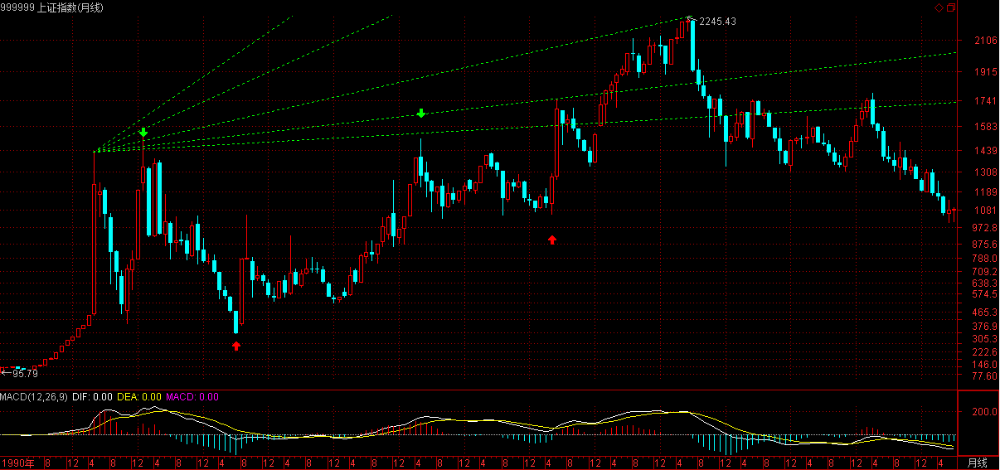
【韶山映山红】从周线图上看2001年6月开始的熊市，巨大的下跌+盘整+下跌，周线笔划分的中枢盘整背驰。】
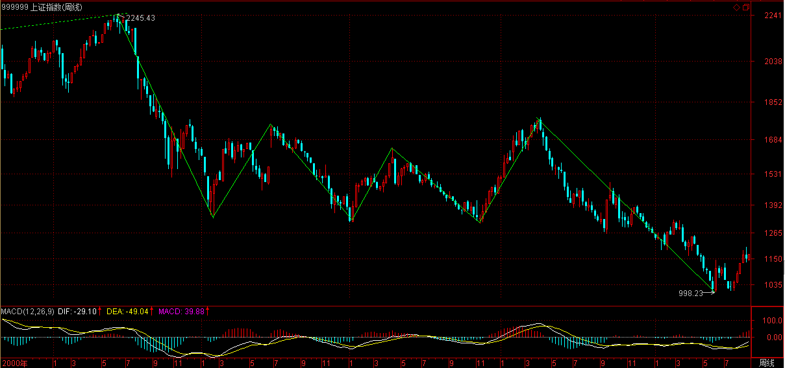
【韶山映山红】从日线图上看周线的最后一段下跌。日线线段划分就是一段。日线笔中枢的划分，a+A+b+B+c的走势，A、B重叠构成更大级别中枢，形成中枢离开段的盘整背驰。在998点的当下看，最后两个下跌笔，MACD黄白线新低，但是绿柱子高度明显不足，面积也缩小，说明下跌速度还有，但加速度开始反向了。实际上黄白线的大幅下降是因为最后一笔下跌的高点附近没有平台结构，没把黄白线充分的拉回0轴。998是筑底还是反弹？需要进一步分析。】
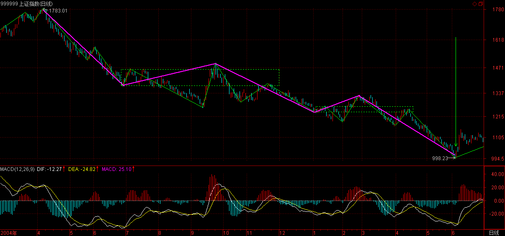
【韶山映山红】桃花博客配图。】
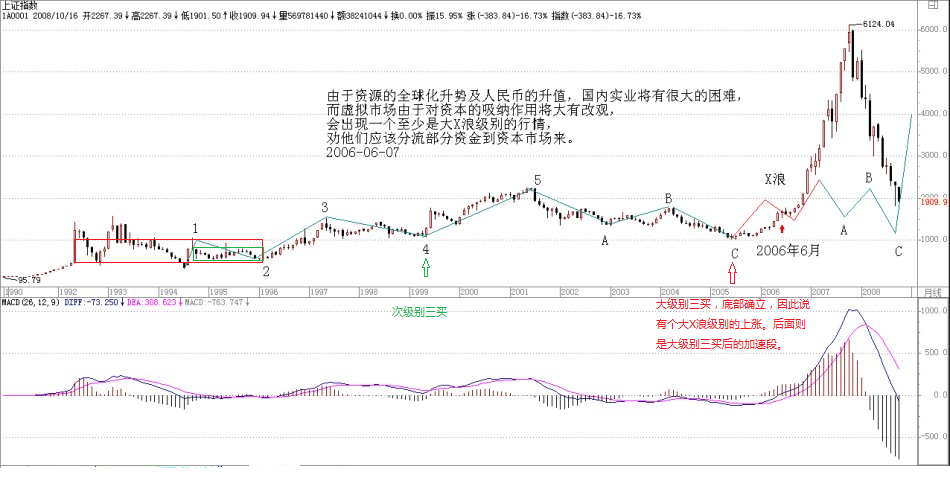
【韶山映山红】若禅精舍（陈秋明）：
是时，人民币升值窗口开启，美元贬值周期。以美元计价的全球大宗商品展开历史性牛市。而大宗商品，是几乎所有制造业的原料，原料成本上升，实体当然有困难，同时人民币升值造成出口贸易萎缩，同时制约以出口为最终导向的所有制造业。当实体投资的回报率降低，虚拟市场对资本的吸纳作用增强，包括债券、股票、期货等金融衍生品。此外，实体资本与虚拟资本之间的相互流动性，是证券行业的分析重点之一。
】
【韶山映山红】东学熹用（柏熹）：
一个有趣的统计数据，每一次工业革命都会伴随着财富潮的到来，如果你幸运的出生在那个10年（中美的信息革命富豪皆出生于一个固定的10年周期，美国1955-1964；中国1964-1973）
这说的是世界范围的技术革命，而具体到每个个体，则会有三次破阶的机会，如22岁后要选择结婚一般的平常，30-40之间的二胎则会引发换房升级的刚需，这些都是有迹可循的。难点在于对级别的把握上。这里我有几点观察可以贡献大家。
美国的财富潮对应着工业革命的节奏与主题，基本遵循了奴隶主纺织业-铁路基建-汽车工业等-计算机的节奏，时间上比中国要普遍早10年左右
中国自邓公主导改革开放，致富群体从投机倒把-食品制造-地产-电信-互联网
巨大财富来自于两种可能，创造财富和掠夺
人生的同构与民族，国家，世界是穿插的
出生的时间、地点决定了命运的一大半
】
今年，过完春节，这帮家伙突然开始不断骚扰本ID，说要入市。【韶山映山红】这个春节是2006年1月29日。2005年6月6日998大底，半年的上涨，赚钱效应开始了。贪。】
【韶山映山红】当时完整的月Ｋ线全局图。从当时的月线图可以看出，2001年6月开始的熊市，在长达2年的盘整震荡之后，有二次筑底的可能。】
【韶山映山红】从周线图上看2001年6月开始的熊市，巨大的下跌+盘整+下跌，周线笔划分的中枢盘整背驰，然后周线笔划分的筑底反弹开始。】
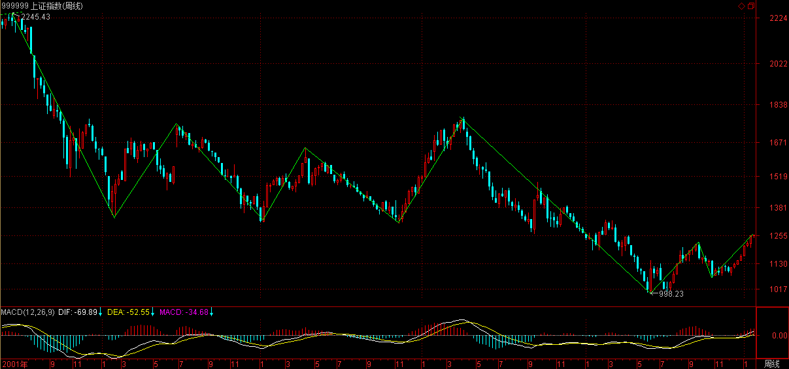
【韶山映山红】从日线图上看周线的最后一段下跌和反弹。日线笔划分的走势，a+A+b+B+c的下跌没有形成标准的趋势背驰，998点开始的日线笔反弹回到最后一个中枢，然后又经历了回踩中枢的调整，慢慢积蓄力量。】
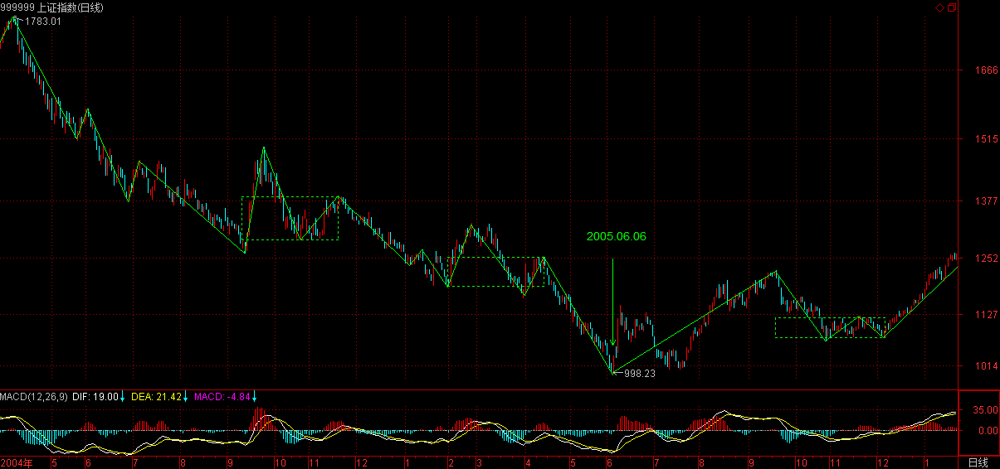
本ID当时已经忙得无暇分身，对他们一番数落，然后告诉他们，现在是个人都能挣钱，自己玩去，没空理你们。【韶山映山红】静姐01-06】
【韶山映山红】从日线图上看反弹。日线笔的a+A+b结构。离开段呈线段类上涨趋势。】
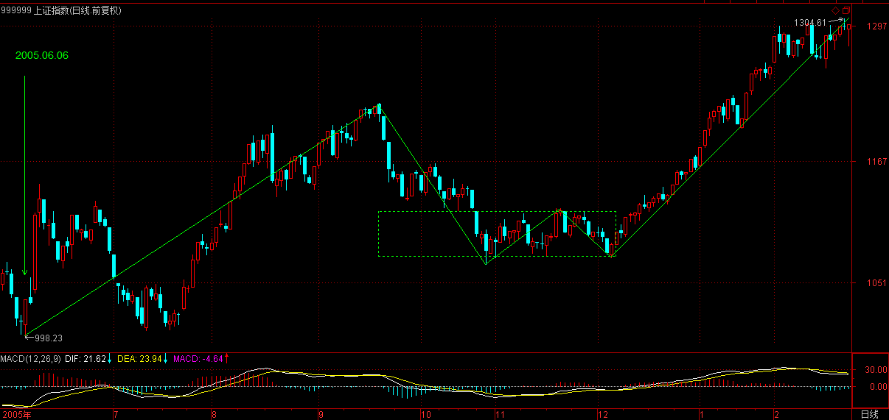
进入三、四月份，当时有色等行情已经很火暴，这帮家伙想大进又怕风险，一直在小打小闹。【韶山映山红】想吃，怕烫。】
【韶山映山红】从日线图上看下跌和反弹。反弹已经跨过了前面下跌的中枢，力度大于对称的下跌，要形成上涨趋势。】
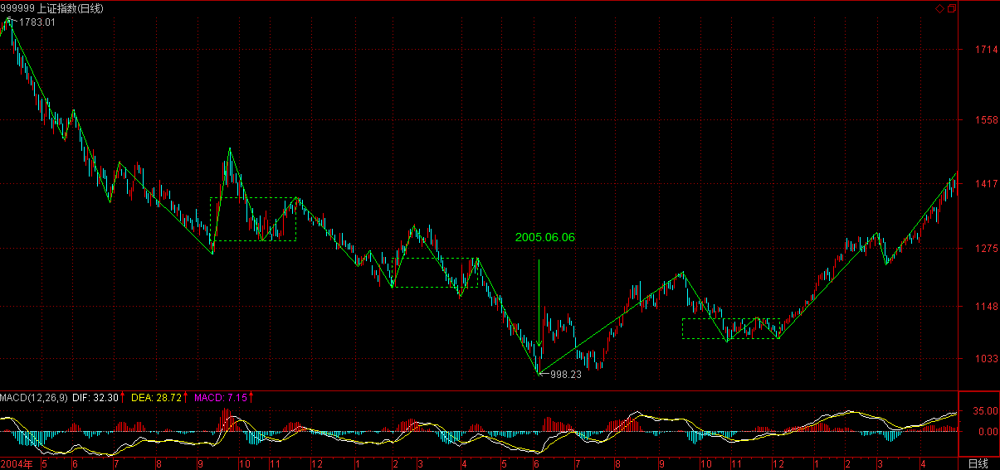
【韶山映山红】从日线图上看上涨。底部中枢之后的线段类上涨，将形成上涨趋势。】
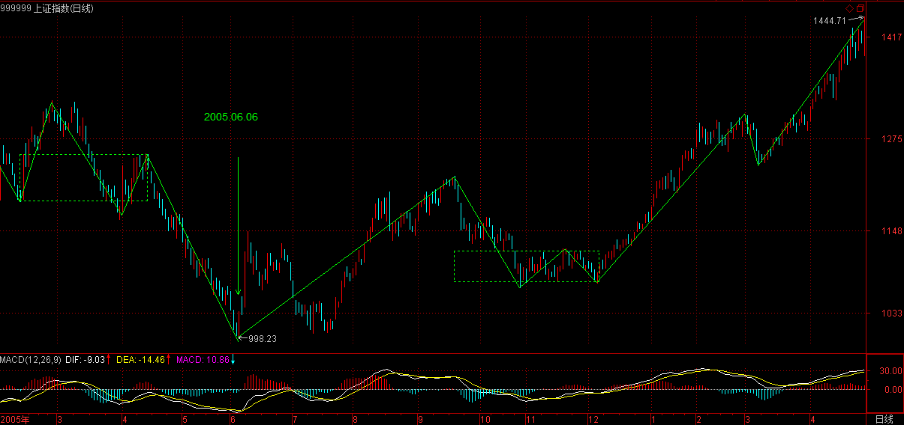
有一天，又在一起玩，他们一定要本ID选择一些具体的股票。因为这两年一直有很多外资大基金进来接触要收中国快速消费品的企业，还有就是一些大的周期行业将面临重组，【韶山映山红】快速消费品，收购题材。大的周期行业，重组题材。】就让他们去关注这两类股票和权证。【韶山映山红】当时有认购权证、认沽权证，2011年8月11日中国A股市场暂时告别权证时代。】 【韶山映山红】静姐01-07】
【韶山映山红】东学熹用（柏熹）：
贡献图一张
】
【韶山映山红】补充参考图。】
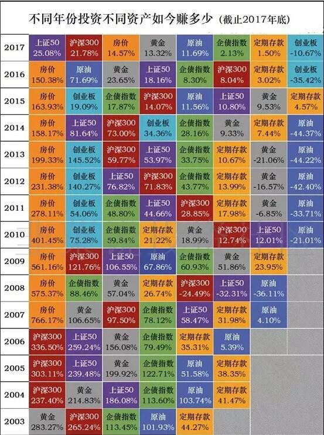
【韶山映山红】补充参考图。】
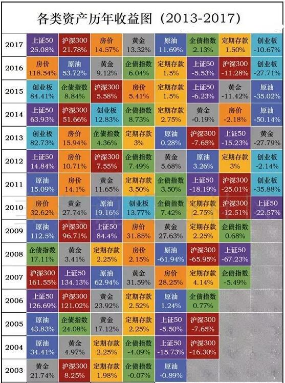
五月份后，股市大涨，大家都很忙，中旬时又有机会碰头，一问之下，基本都没怎么大买，买了的也没几个站就下车了。他们都显得很烦躁，不断问有什么可买的。
【韶山映山红】从周线图上看反弹力度。拉升迅速，开始跨越前面的中枢。】
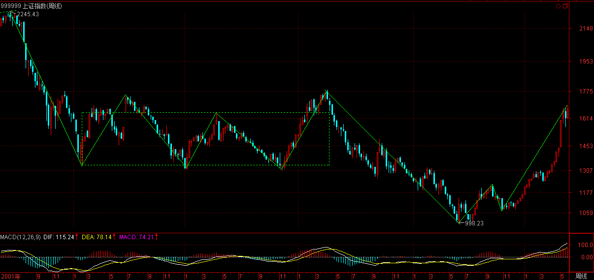
【韶山映山红】从日线图上看下跌和反弹力度。已经跨过下跌的中枢，阻力很小了。】
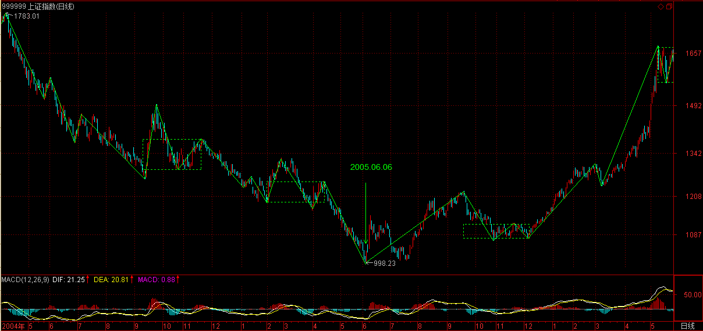
【韶山映山红】从日线图上看上涨。过于快速的拉升，激发了无穷的贪。】
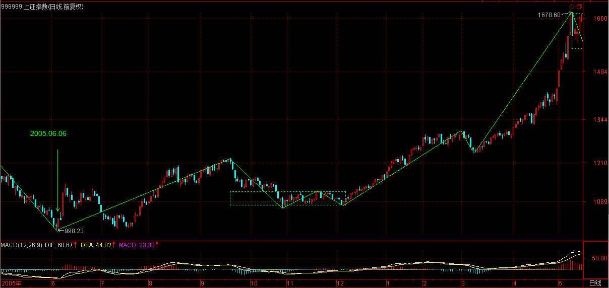
既有点可怜又有点烦他们，怎么在市场外弄得好好的，一到市场里都成这样了？【韶山映山红】静姐01-08】就有点敷衍地告诉他们，去买深沪两地3元上下的本地股，【韶山映山红】为什么选择“深沪两地3元上下的本地股”呢？★关于沪深本地股的优势，可以做个专题，以后研究。】而且告诉他们，这样下去肯定要出问题的，最好自己好好学学，别人怎么厉害也不可能整天像照顾小孩一样看着。【韶山映山红】工欲善其事，必先利其器。抱大腿看似无害，“肯定要出问题的”。】 【韶山映山红】静姐01-09】
【韶山映山红】沪深本地股的优势：
１，群众基础良好 。从历史上看，沪深两市本地股一直具有群众基础好、题材丰富、板块联动效应强等优点，也是大资金波段套利的重要目标，而且，本地股具有大牛市有大行情的特征，且在弱市 和平衡市中也比较容易出现牛股。
２，容易引起市场共鸣 。深圳本地股与上海本地股行情一直具有较强的联动效应，而且两市本地股也是短线游资热衷参与的重点板块。两市本地股市值普遍较小，只要有活跃资金进场，很容易引起市场共鸣，短线具有较强的冲击力。
】
【韶山映山红】扫地僧：时间点是2006年五月份后，我们先来看一下当时的大盘走势：
可以看出，5月后，正好是大盘出现调整的时候，一般来说，在牛市里，每一次大的调整都是热点切换的时候，为什么要选择3元附近的沪深本地股？第一，3元附近，意味着是低价股，由于在5月之前，市场整体已经有了一波上涨，那么在进入调整之后，低价股票的吸引力会大大增强，而且，到牛市最后阶段，也很难再见到10元以下的股票了，因此这时候选择3元附近的低价股是非常安全的。第二，选择的是沪深本地股，而不是其他地区的股票，这是因为股票市场只有沪深两个交易所，交易所所在的城市自然有着非常好的群众基础，那么两地的本地股也最容易受到关注。再加上同在一座城市的原因，本地上市公司与交易所一般都会有一定的关系，在政策的理解程度上自然具有优势，也最容易成为政策的试金石，具有标杆作用，所以从历史上，两地的本地股在每轮行情中都会受到关注和炒作，其表现都不会太差，包括在最近2015年1月的大调整中6元左右的沪深本地股表现都不错。所以，选择沪深两地的低价本地股就是一个双保险。】
【韶山映山红】若禅精舍（陈秋明）：
首先要判断行情性质，不断问买什么，买了又扔。说了不信、信了不听、听了不做，千万亿劫永无出期。理则顿悟，不能理则，就永远处于惊恐与疑惑当中。沪深本地股，是时全流通改革，对于便宜的国企股票，资金相当偏爱，而沪深本地股，占着地利，也更容易有改革政策出台。
好玩的是，十倍股基本都出在那几个固定的地区，它们所处的环境，对企业的发展，有着加成效应。
】
【韶山映山红】桃花博客配图。】
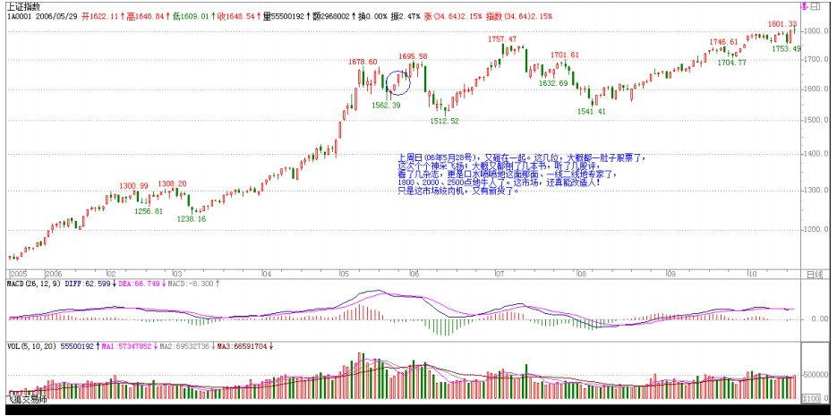
上周日，又碰在一起。这几位，大概都一肚子股票了，这次个个神采飞扬；大概又都刨了几本书，听了几股评，看了几杂志，更是口水喷喷地这面那面、一线二线地专家了，1800、2000、2500点地牛人了。【韶山映山红】“上周日”是2006年6月4日。上周新高1695点。】
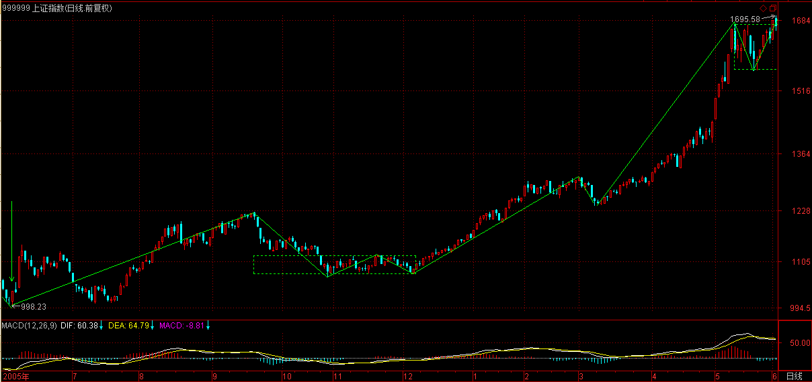
这市场，还真能改造人！只是这市场的绞肉机，又有新货了。【韶山映山红】刨了几本书，听了几股评，看了几杂志，就专家了，就牛人了。其实只是市场的绞肉机里的一块肉。】 【韶山映山红】静姐01-10】
【韶山映山红】桃花博客配图。】
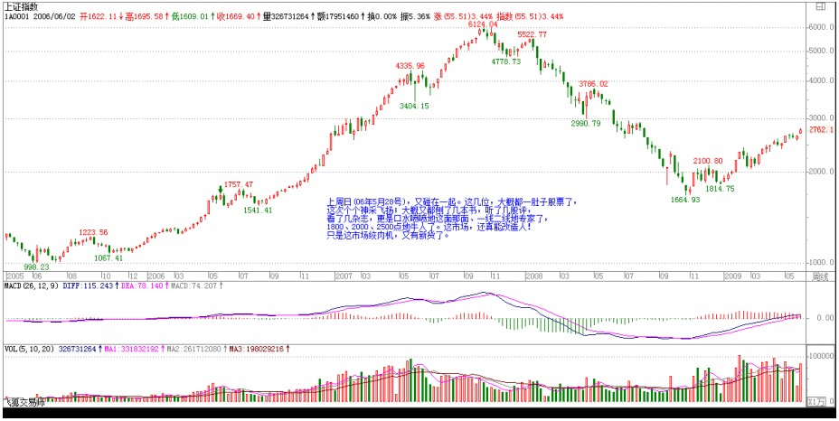
有人说，市场是老人挣新人的钱，而市场中的老人，套个10年8年的一抓一大把。其实，市场从来都是明白人挣糊涂人的钱。【韶山映山红】老人挣新人的钱？明白人挣糊涂人的钱！】 【韶山映山红】静姐01-11】
在市场经济中，只要你参与到经济中来，就是经济人了，经济人当然就以挣钱为目的，特别在资本市场中，没有慈善家，只有赢家和输家。而不会赢钱的经济人，只是废人！【韶山映山红】经济人，就是以完全追求物质利益为目的而进行经济活动的主体，人都希望以尽可能少的付出，获得最大限度的收获，并为此可不择手段。 】
无论你在其他方面如何成功，到了市场里，赢输就是唯一标准，除此之外，都是废话。【韶山映山红】学习缠论也一样，学以致用，知行合一，赢输就是判断的唯一标准。】 【韶山映山红】静姐01-12】
【韶山映山红】若禅精舍（陈秋明）：
明白人、糊涂人。所谓市场经济，就是一切商品货币化、证券化的过程，在证券市场中，不存在资本以外的流通，以输赢为唯一标准。】
【韶山映山红】东学熹用（柏熹）：
市场不缺赚钱的人，但是概率上总是有2/8属性，这往好了说是《那些沦为赌狗的大学生》，差了说是《三和大神》。不妨这样说，人生是个概率的游戏。
王侯将相宁有种乎？王侯将相宁有种乎？！王侯将相宁有种乎...】
（待续）
【韶山映山红】西子凌波（阿娇）：
娇：大牛市初始，缠主发表一系列文章“为尚福林鼓掌-------不会挑逗各方利益的战争不是一个好的调控者 (喜欢数学的女孩: 2005-06-20 20:17:51)”、“为尚福林鼓掌-------必须对企图用股权分置问题要挟政府的用法律制裁之 (喜欢数学的女孩: 2005-05-16 12:06:07)”“G股是G点，市场的原理和性的原理是一样的”（作者：喜欢数学的女孩 提交日期：2005-8-5 12:15:00） 2006年5月12日发表《G股是G点，大牛不用套！》，半年后缠中说禅于2006-06-07 18:08:15为什么开始写教你炒股票1：《不会赢钱的经济人，只是废人！》。
整个108课，缠带领着大家经历了一个完整的上涨启动和下跌的结束，她在08年8月教你炒股票108：何谓底部？从月线看中期走势演化(2008-08-29 09:15:01)一文中明确教大家在此处的分型的判断中如何确立底部分型到2008年10月底确立后。课文也随着她的2008-10-10 09:24:36《无话可说》结束了全部课程。
】
【韶山映山红】南无月光如来：
进入股票市场，如果不是为了赚钱，那真的是脑子进水了。可是股票市场一赚二平七亏的铁律决定了大多数都会成为炮灰。所谓一将功成万骨枯，最后能生存下来长期赢利的毕竟是极少数人。而综观这少数人中的成功铁律，无不是心态理念好，资金管理强，基本技术面成熟的。
既然来到了这个市场，就必然立志要做赢钱的经济人，不做废物点心。
加强技术学习，形成交易系统，增强执行能力，必能战无不胜 。
下图标示了作者写此文的点位。之前的红箭头应是某级别的3买，你能找到3买之前的1买和2买么？
http://blog.sina.com.cn/s/blog_60c36c130100hxmk.html 】
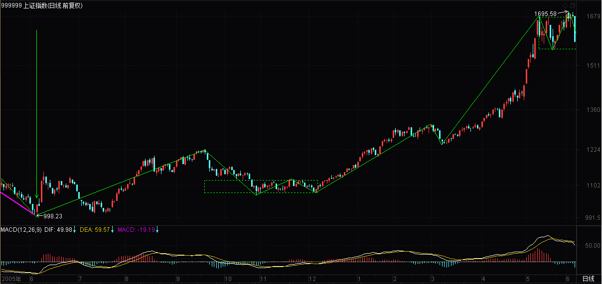
哈！炒股我可比你内行了！
我可是中国第一批股民——而且还是至今仍在这个世界上最不讲规矩的资本市场上挣扎的散户！
不过今天我空仓了！下午收市前在第四个涨停价卖掉了仅有的4000股梅雁股份。大盘今日暴跌，头部构筑明显。也许上证指数在1600点上下还会有一番拉锯战，但上升趋势己改变，此时最好的应对是离场观望！
2006-6-7 22:51
【韶山映山红】600868梅雁股份,2012-11-15变更为梅雁吉祥。2006-08-22送转10送4.9，2006-08-28送转10送1.49。】
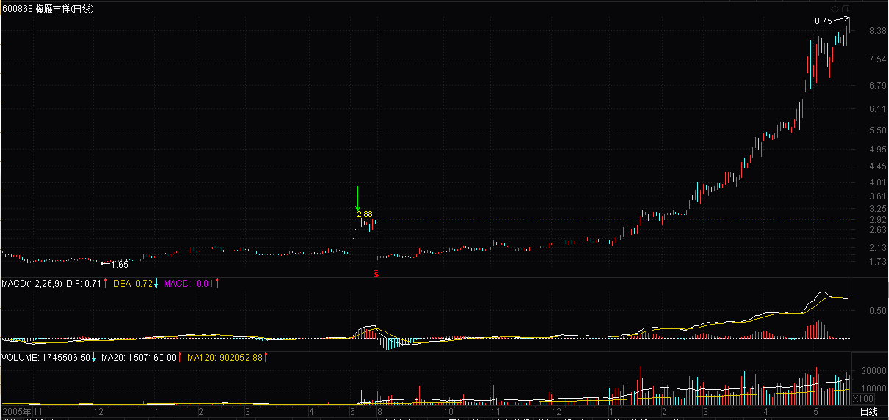
从开始看到这里，终于明白缠缠为什么开始讲股票了。
巨大的失望也开始浸袭。
2007-4-22 11:50
呵，现在愿意好好学习的多起来了，一起努力吧。计划每课在我博客里，每课开个帖子，有兴趣的可以一起讨论。
2007-9-15 11:12
粗略通读了1遍功课，现回头来，重新学习！
遥想，要是当年当日已经认识缠主，该有多幸运！！！妒忌罗锅~~~~
缠主开课之日，正是1000点上来的第一个日线中枢构造之时？当日恰在头部位置。20070530为第二个日线中枢？而今日今时，是否正在第三个日线中枢构造中呢？感慨万分！
2007-10-21 13:47
2007年10月26，27两日，
000822在5分图上中枢震荡上下两次
26日最高17.15，我卖在17.10，然后部分去补000553，分两次买，一次11.74，一次11.80，当天553最低见11.68.今早开盘553最高见12.33.而822最低见16.65.
今天822再次震荡，我再次在17.10卖出，最高在17.19，下午在16.73抢回，现在822升至17.3
也就是这两天的822震荡，我当下都判断对了，也实盘买卖了，帖子时间在下面，更详细的在我博客的
学习缠论的心态那个留言里。
有人会说，不就是百分之二三的差价吗，而且又不是全仓，更没什么收益啊，这里重要的不是今天的鱼多大，而是这么窄幅，快速的级别小的震荡，我都能判断对，是能判断到转折的那一根一份k线，那么大级别能更难吗？
石猴 删除此人所有评论
2007-12-26 13:18:24
822还没卖点，一分级别卖点快出了
2007-12-26 13:23:05
呵呵，看我说对了吧，一根线就竖起
出了些822，
2007-12-26 13:58:09
不弄了，这两个都忙不过来，刚才一毛卖的822，要不是忙着看沙和尚，一定能一毛五卖掉
2007-12-27 09:42:35
昨天17块10出了些822，
分两次11块74，11块80挂单沙和尚
请看看现在一个16.66
一个12.30
2007-12-27 11:41:07
下午去抢回822
2007-12-27 15:03:12
[下午73补回了822，没人抢，随便买
2007-12-27 21:34
所以常见的心理就是学了一段时间，就怀疑理论有毛病
我把上面的帖子写出来，把000822的实盘用新浪记录下来，就是为了告诉大家，这个理论没毛病，当下的，准确的判断对缠论是必然的事情，哪怕是最后转折的那根一分的k线。
其实如果你对缠论思想有理解，这些根本不必要
但为了坚定些愿意努力学习人的信心，我把这些贴在这个课程开头，我能做到，有一天你也能做到。
等我把822成本做成零，会再来贴一次，不过希望那时没这个必要了。
我的目标是猎鲸，尤其是猎洋鲸，这些对我只是前进了一小步，路还长，大家一起努力吧。
2007-12-27 21:41
呃。缠姐姐。你倒底在不在啊。那个文章上的图片，显示的是2009年1月20日的日期呢。那如果不是你贴的，是谁？你是博主呢？如果不是你贴的话。那是谁？在不在，吭一声嘛。俺还没见过你撤。出个声嘛。
呃。给姐姐讲点心理话咯。其实我略略看过姐姐的博客，没有仔细看啦，只感觉姐姐博学多才啊？可是相对的来说，姐姐学这些东西花费了太多的时间和精力。却不知道姐姐你是否有时间游戏和快乐啊？有时我在想，如果姐姐您真的呃。那希望你在另一个世界（如果真有轮回的话），能够笨一点，不要学习这么多东西。像普通人一样。快乐一点，开心一点。这是我最真实的想法。呃。
2009-1-21 00:56
[匿名] 新浪网友
真正的人生价值就是你不在了，可还有很多朋友真的很想你.
从头学起。
2009-3-25 17:06
[匿名] colin2185
禅师伟大之处不是在市场上赚到了多少钱，而是在这世界上留下了你的一套理论，并被大家所学习所敬重。而且这发生在禅师离开之前，是不幸之大幸，缘不尽说。
2009-4-12 03:27
前几天偶然知道缠师，却已仙逝
斯人已逝，禅理留存
炒股近四年，却不知有此高人
看到缠师留世文章，唯有好好学之，才对起缠师，祝缠师在天堂健康
2009-4-14 22:43
[匿名] 新浪网友
缠师的第一课，在此留言表示尊敬，算是开始学习的一个开始吧。
可是心中忍不住又是一阵伤感，只怪自己后知后觉了
2009-4-15 20:48
[匿名] 新浪网友
将您的文章仔细看了一些，才发现自己是多么的肤浅。
能读到您的文章，真是前世修来的缘分！
当年老子留下洋洋洒洒五千言，飘然而去，
或许先生本是属于天堂的，
您留下的这些文字，
已足够我们用一生去拜读、去实践了。
天堂里没有车水马龙，
但一定有您挚爱的股票！
2009-4-16 21:35
缠师开课时大盘在1600点左右,闭课时大盘也在1600点左右,真乃神人也.
2009-4-18 15:52
在股市中摸瞎，刚看到一丝曙光，又被缠师抛弃，没有缠师的亲引，又将在黑暗中摸索了，.....好在禅师身后留下了不完整的缠论，努力攻读，更忆缠师！！！
2009-7-24 01:04
这两天来看些帖子，到处都看到什么仙去，什么天堂，什么一路走好
既然学习小缠的东西，对人家至少要有良好的愿望吧，
除了网上的留言，除了从网上得来的所谓消息，你们有什么证据说小缠死了？
没有确凿的现实证据前，说几句祝福的话会累死你们？
到宁愿相信小缠死了，真是tmd奇了怪了
2009-8-30 16:02
心得:
一,操作级别的理解,根据可操作的时间,条件,资金,股性,通道等综合确定;
二,买卖点确认的背驰工具,盈利的原理;
三,背驰的理解,反映多空力道的变化;
四,走势分解,组合,利于当下判断为原则;长,短期判断相结合;
五,走势分解,组合的元素确认,顶,底,笔,线段
2009-11-12 22:16
[匿名] 新浪网友
留个言吧。
今年十月无意间看到你的文字。
总相信你是个女子，看着惹人生怜。
记得你说过：如果你脑子里已有了期盼，那么什么理论都是白费，因为你甚至可以把刀子的白光看成情人桥下的那一轮月光。这何止是股票，现实生活中的情感不也是这样子么？
想到你所说的股票与咒语，你说很灵验的。但是要至少说上一百万次，我估计自己做不到。但是如果，我是说如果，所有把你称为老师的学生（我暂时不算）都为你祈福，那么你的病是不是就该好了呢？我做不到一百万次，但可以做一百次，缠姐安康。 就当一个女子对另一个女子的祝福。
无论你在哪里，但愿你能感受的到，相信有许许多多如我这般心情的人。
-----
阿奇。
2009-11-15 12:43
[匿名] 新浪网友
缠论真有生命力，想当初在这阅读的人不过数千，评论也只一两页，随着时间的推移，这里的人气反而愈加高涨，足见缠论的珍贵。
2009-11-15 22:47
以为股海里最多只能钓出臭铜，没想到居然还有金匙！
2009-11-20 16:08
猴：
2009-08-30 16:02:43
这两天来看些帖子，到处都看到什么仙去，什么天堂，什么一路走好
既然学习小缠的东西，对人家至少要有良好的愿望吧，
除了网上的留言，除了从网上得来的所谓消息，你们有什么证据说小缠死了？
没有确凿的现实证据前，说几句祝福的话会累死你们？
到宁愿相信小缠死了，真是tmd奇了怪了
----------------------------------------------------------
技术只是战士手中的剑，理念才是战士的魂。 来这里学习的多是磨砺了手中的宝剑，却很少提升战之魂。禅师领入门，成不成大器却看各人。古往今来多少人能理解缘分，感悟缘分？这里的千言万语，不论如何遣词，祝福也好，送行也罢，寄托的均是拳拳不舍之心。从另个角度看，似乎这众多看不破缘的人也是禅师今世最不可割舍之一缘吧？
2009-11-20 16:43
[匿名] 新浪网友
这里好似大千人生。印证了那句“枯木龙吟照大千”呵。
2009-12-6 19:24
[匿名] 新浪网友
首先感谢缠主给我们很好的炒作理念和技术，缠主是中国大资金的操作者， 能现象说法，自创一套炒股技术，虽说有些百转思悟难通，但静下心来，还是有一定收获的
我感觉缠论很好，好在几个方向，一是当下，没有预测，一切把该走的走势分类好，股价走到哪步就怎么走，时时控制风险。二是级别，小级别运转构成大级别，大级别走势又管着小级别，随便你玩哪个级别，中长短级，超短都行。三是背驰，股价走势转折在哪，在背驰，走势分解及MACD的运用，能提前知道股价涨跌，这比别的炒股理论好不知多少倍。四是三买三卖，能清楚告诉你从哪进去，从哪出来，安全获利。
谢谢缠的伟大理论，如果对缠论有不屑或攻击，那说明你对缠论无缘或者放不下自身的业力所牵。
飞浪思悟
2009-12-29 14:32
以背驰的发生与否作为买卖依据只有理论意义，没有实际操作价值。这其实很容易从数理上得到论证，只要你能搞得清楚什么是MACD，什么是DIF。价格的运动趋势发生减速和价格的运动方向发生变化是没有必然联系的。价格转向必然伴随价格减速，但价格减速远不一定导致价格转向。所以说，股价转折的过程中伴随背驰是必然的，背驰必然导致股价转折就是瞎掰了。拿背驰过程中产生的震荡来作为背驰必转折的依据就是粉饰了。
这里有很多值得学习的观点和原则，也创造性地归纳了许多别的理论，但决不是没有瑕疵，而是错漏很多。如果盲信盲用会死得难看！如果各位有心认真探讨，我可以用详细告诉大家他的理论哪些是很有道理的，哪些是经不起推敲的。
但所有这一切并不是要对先人进行冒犯，平心而论，像这么高智商的人我也生平仅见。只在这里对各位真心学习的朋友提个醒：学好数学，多举例查证，你就不会盲信。
你们的朋友 飞尝可乐
2010-1-12 10:29
今天不是个特别的日子，却忍不住进来看看你。
第三遍读你的缠论，每次都有新的收获。
人有时并非单纯以肉体的存在为唯一标准来衡量生死，有的人活着犹如已死，有的人虽死犹生。所以禅师是生是故已不重要，因为他永远活在我们每个缠迷的心中，深深的怀念~~
2010-1-16 21:21
看到9课那个垃圾的留言回复，本不值得一驳的，但为了避免那个垃圾误导后来的学弟学妹，在第一课给后来的朋友打打气。
断断续续的接触股市近10年时间了，因为工作，始终没能踏踏实实的学进去。仔细算下，真正用来学习股票的时间大概2年左右吧，期间关于股票的书也买了不少，为了有个比较准确的数字，刚才专门去数了一下，一共117本，呵呵。
可以说除了江恩，几乎所有和股票相关的理论都花工夫认认真真的研究过了，但始终未得其法，一直不能做到稳定盈利，分析研判也只能在一个不高的成功概率上，也许是太笨吧，哈哈
在后面的帖子里有两位学长的回复，一个曾获过市一级数学比赛的奖，另一位则在全国数学比赛中得奖，也不知这两位学长现在学的怎么样了？呵呵，作为工程师，我主持开发的项目中有好几项都获得过国家级的科技进步奖，所以，本人对自己的智商还是充满信心的，呵呵，吹嘘一下，满足一下虚荣心，呵
从去年的9月份知道了缠论，开始逐课逐页的认真的学习，包括所有的回复，边学习边整理，边学习边练习，几乎占用了所有的业余时间，到3月底才把第一遍学完，将近用了6个月。
虽然目前只是刚刚入门，但是看行情走势再也不会迷茫了，如果去除实战操作时的心理因素，纯分析的成功率远大于90%！！！这是过去花费数年时间也没能达到的，所以我对未来应用缠论的前景也充满信心。
缠论是所有关于股票投资中最科学最严谨最具可操作性的！朋友们，来到这里是我们的缘分，是我们的福气，感谢缠师吧！感恩禅师吧！不要身在宝山不见宝，哪怕你只能小学毕业，也足矣胜过95%的人了（禅师原话）！！
认认真真的学习，仔仔细细的领会，踏踏实实的操作，你会成为一个跟过去（单指技术而言）完全不同的人！
呵呵，罗哩罗嗦写了一堆，有缘者得之吧
与有心人共勉
2010-4-8 21:33
刚学过一遍缠论，现在重新复习一遍。不管怎样我还是要感谢禅师，缠论是在我对股市操作有所感悟的情况下，一个偶然机遇被吸引过来的，感触颇深……
学缠论，如果你是“一根筋”的孔男人，缠论会离你越来越远！学缠论，如果你认为必须要有高等数学等等的东西，那缠论也会离你而去。
其实很简单的东西，但缠师就是不明明白白告诉你答案……
也许百年以后才会有人承认”缠论“的伟大，或许永远也不会……
真正学会缠论的人，很可能变得沉默不语……
还有……就是劝告那些一提起缠论，就”阿弥陀佛“等……好像懂得很多，心态很好……这里告诉这些人：禅宗、佛道、论语中的很多东西有助于改善你在股票操作时的心态等方面的东西，但不要学了缠论后，技术没学成，钱没挣到，反而把自己变成半个和尚、半个道士阴阳怪气之类的比“孔男人”还“孔男人”。
2010-12-18 22:47
[匿名] 新浪网友
08年近6000点带着全部家当进绞肉机，08年9.18带了点皮出来了。一直没有碰股票，10年开始禁不住诱惑又进去了，到现在只有点骨头了！痛定思痛，潜心学习缠论！
2011-4-12 22:14
本课全局性批注：
任何可以称得上“道”的真经都会有心法来辅助的，因为道一定是内外兼修的，否则，无论学到的技艺多么高超，最后的结果大都会和初衷相背离。
教你炒股108的前几篇看似和炒股无关，却大有相关，缠君在此几篇内把很多修心类的法门都通过比较简单的实例阐释开来。贪婪、恐惧都是人的本性，这种本性在资本市场里会被放大。
炒股票炒期货自然和搞实体不同，如果说后者更需要的是勤勤恳恳的耕耘的话，那前者更需要的是智慧、方法，这智慧和方法又可以分为二：1、技艺方面的 2、心法。资本市场最大的魅力在于价格呈现连续性的变动，除了一些因为重组或者注资导致的大跃进活动，大多数的情况价格都在连续的波动。如果说搞实体的人的成败大都通过断裂点的方式在某一时刻完成质变，那资本市场的人的成败却恰恰相反，资本市场中的人的质变大都是连续性的量变导致的，每天的4个小时累积一点点，直到最后的结果显现出来。
在实体中，失败一次，卷土重来并最终成功的人太多了，而资本市场不同，资本市场全局性的失败，是不允许发生的，一旦发生的话可能就再也回不来了，因为资本市场的失败大都是日积月累形成的，每天每分每秒都在感受其中，简单的重复足以摧垮最坚定的意志，而实体的成败大都在某一个时点或者一个特定的时间段内呈现出来，这也是为什么搞实体搞破产的人，最后还有这么多人重新站立起来的原因。失败并不可怕，但被摧毁的内心足以让任何人望而却步，人没有了心，不过如皮囊一般行尸走肉。
2011-6-3 10:09
以上批注来自亿安科技作手的博客，以后会继续转帖，不再特别说明出处。
2011-6-3 10:14
用户0
奉劝新进的同学不要进行小级别操作还有就是不要频繁换股
否则容易把心态搞坏
2011-8-13 14:32
【韶山映山红】缠中说禅 教你炒股票 108课 博客原文 的时间分布。】
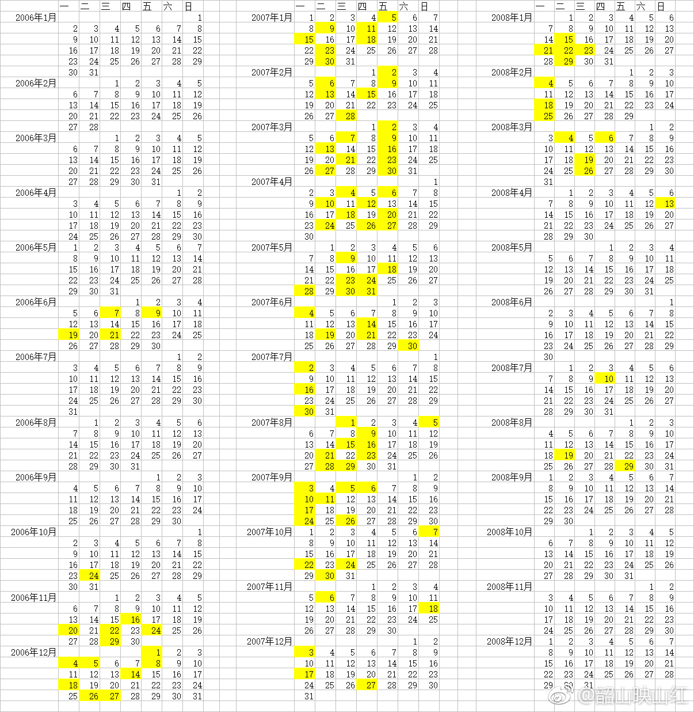
【韶山映山红】缠中说禅 教你炒股票 108课 博客原文 目录。】
教你炒股票 1：不会赢钱的经济人，只是废人！(2006-06-07 18:08:15)
教你炒股票 2：没有庄家，有的只是赢家和输家！(2006-06-07 22:41:27)
教你炒股票 3：你的喜好，你的死亡陷阱！(2006-06-09 17:03:48)
教你炒股票 4：什么是理性？今早买 N 中工就是理性！(2006-06-19 21:41:14)
教你炒股票 5：市场无须分析，只要看和干！ (2006-06-21 20:52:02)
教你炒股票 6：本 ID 如何在五粮液、包钢权证上提款的！(2006-10-24 12:45:16)
教你炒股票 7：给赚了指数亏了钱的一些忠告(2006-11-16 12:00:01)
教你炒股票 8：投资如选面首，G 点为中心，拒绝 ED 男！(2006-11-20 12:00:31)
教你炒股票 9：甄别“早泄”男的数学原则！(2006-11-22 12:00:00)
教你炒股票 10：2005 年6月，本 ID 为何时隔四年后重看股票(2006-11-24 12:02:50)
教你炒股票 11：不会吻，无以高潮！ (2006-11-29 12:00:00)
教你炒股票 12：一吻何能消魂？(2006-12-01 12:03:48)
教你炒股票 13：不带套的操作不是好操作！(2006-12-04 12:08:28)
教你炒股票 14：喝茅台的高潮程序！(2006-12-05 11:35:20)
教你炒股票 15：没有趋势，没有背驰。(2006-12-08 11:55:57)
教你炒股票 16：中小资金的高效买卖法。(2006-12-14 12:06:47)
教你炒股票 17：走势终完美(2006-12-18 11:52:42)
教你炒股票 18：不被面首的雏男是不完美的。(2006-12-26 15:05:58)
教你炒股票 19：学习缠中说禅技术分析理论的关键(2006-12-27 15:18:10)
教你炒股票 20：缠中说禅走势中枢级别扩张及第三类买卖点(2007-01-05 15:23:22)
教你炒股票 21：缠中说禅买卖点分析的完备性 (2007-01-09 15:03:58)
教你炒股票 22：将8 亿的大米装到 5个庄家的肚里。(2007-01-11 15:10:32)
教你炒股票 23：市场与人生(2007-01-15 15:50:11)
教你炒股票 24：MACD对背弛的辅助判断(2007-01-18 15:02:43)
教你炒股票 25：吻，MACD、背弛、中枢(2007-01-23 15:13:13)
教你炒股票 26：市场风险如何回避(2007-01-30 15:09:57)
教你炒股票 27： 盘整背驰与历史性底部 (2007-02-02 15:11:27)
教你炒股票 28：下一目标：摧毁基金(2007-02-06 15:04:50)
教你炒股票 29：转折的力度与级别(2007-02-09 15:08:08)
教你炒股票 30：缠中说禅理论的绝对性(2007-02-13 15:07:02)
教你炒股票 31：资金管理的最稳固基础(2007-02-15 15:16:12)
教你炒股票 32：走势的当下与投资者的思维方式(2007-02-28 08:44:37)
教你炒股票 33：走势的多义性 (2007-03-02 15:20:37)
教你炒股票 34：宁当面首，莫成怨男(2007-03-07 15:09:54)
教你炒股票 35：给基础差的同学补补课(2007-03-09 11:51:34)
教你炒股票 36：走势类型连接结合性的简单运用(2007-03-13 09:00:49)
教你炒股票 37：背驰的再分辨 (2007-03-16 11:51:32)
教你炒股票 38：走势类型连接的同级别分解(2007-03-21 15:23:21)
教你炒股票 39：同级别分解再研究(2007-03-23 15:16:51)
教你炒股票 40：同级别分解的多重赋格(2007-03-27 12:53:22)
教你炒股票 41：没有节奏，只有死(2007-03-30 15:17:22)
教你炒股票 42：有些人是不适合参与市场的(2007-04-04 15:31:30)
教你炒股票 43：有关背驰的补习课(2007-04-06 15:31:28)
教你炒股票 44：小级别背驰引发大级别转折(2007-04-10 15:23:46)
教你炒股票 45：持股与持币，两种最基本的操作。(2007-04-12 15:39:04)
教你炒股票 46：每日走势的分类(2007-04-18 15:36:09)
教你炒股票 47：一夜情行情分析(2007-04-20 08:51:58)
教你炒股票 48：暴跌，牛市行情的一夜情(2007-04-24 08:52:02)
教你炒股票 49：利润率最大的操作模式(2007-04-26 08:16:56)
教你炒股票 50：操作中的一些细节问题(2007-04-27 08:42:51)
教你炒股票 51：短线股评荐股者的传销把戏 (2007-05-09 08:30:16)
教你炒股票 52：炒股票就是真正的学佛(2007-05-18 08:49:05)
教你炒股票 53：三类买卖点的再分辨(2007-05-23 08:47:18)
教你炒股票 54：一个具体走势的分析(2007-05-24 01:37:31)
教你炒股票 55：买之前戏，卖之高潮 (2007-05-28 08:12:41)
教你炒股票 56：530 印花税当日行情图解(2007-05-30 22:49:10)
教你炒股票 57：当下图解分析再示范 (2007-05-31 22:35:44)
教你炒股票 58：图解分析示范三(2007-06-04 22:34:47)
教你炒股票 59：图解分析示范四(2007-06-14 08:23:43)
教你炒股票 60：图解分析示范五(2007-06-19 08:04:06)
教你炒股票 61：区间套定位标准图解(分析示范六)(2007-06-21 08:13:21)
教你炒股票 62：分型、笔与线段 (2007-06-30 09:49:51)
教你炒股票 63：替各位理理基本概念(2007-07-02 00:07:39)
教你炒股票 64：去机场路上给各位补课(2007-07-02 21:37:44)
教你炒股票 65：再说说分型、笔、线段(2007-07-16 22:14:16)
教你炒股票 66：主力资金的食物链 (2007-07-30 22:42:05)
教你炒股票 67：线段的划分标准(2007-08-01 22:31:55)
教你炒股票 68：走势预测的精确意义(2007-08-05 10:36:28)
教你炒股票 69：月线分段与上海大走势分析、预判 (2007-08-09 23:03:22)
教你炒股票 70：一个教科书式走势的示范分析(2007-08-15 22:41:35)
教你炒股票 71：线段划分标准的再分辨(2007-08-16 23:02:06)
教你炒股票 72：本ID已有课程的再梳理(2007-08-21 22:37:20)
教你炒股票 73：市场获利机会的绝对分类(2007-08-23 22:35:20)
教你炒股票 74：如何躲避政策性风险(2007-08-28 08:41:11)
教你炒股票 75：逗庄家玩的一些杂史 1(2007-08-29 22:00:23)
教你炒股票 76：逗庄家玩的一些杂史 2(2007-09-03 19:19:43)
教你炒股票 77：一些概念的再分辨 (2007-09-05 23:24:01)
教你炒股票 78：继续说线段的划分(2007-09-06 22:28:31)
教你炒股票 79：分型的辅助操作与一些问题的再解答(2007-09-10 22:37:13)
教你炒股票 80：市场没有同情、不信眼泪(2007-09-11 21:38:07)
教你炒股票 81：图例、更正及分型、走势类型的哲学本质 (2007-09-17 22:57:16)
教你炒股票 82：分型结构的心理因素(2007-09-24 21:31:06)
教你炒股票 83：笔-线段与线段-最小中枢结构的不同心理意义 1(2007-09-26 21:28:05)
教你炒股票 84：本ID理论一些必须注意的问题(2007-10-07 16:09:06)
教你炒股票 85：逗庄家玩的一些杂史 3(2007-10-22 21:42:06)
教你炒股票 86：走势分析中必须杜绝一根筋思维(2007-10-24 21:53:45)
教你炒股票 87：逗庄家玩的一些杂史 4 (2007-10-30 22:05:40)
教你炒股票 88：图形生长的一个具体案例(2007-11-06 22:38:43)
教你炒股票 89：中阴阶段的具体分析(2007-11-18 20:14:06)
教你炒股票 90：中阴阶段结束时间的辅助判断 (2007-12-03 22:33:08)
教你炒股票 91：走势结构的两重表里关系 1 (2007-12-17 21:40:15)
教你炒股票 92：中枢震荡的监视器 (2007-12-27 20:31:33)
教你炒股票 93：走势结构的两重表里关系 2 (2008-01-15 18:08:05)
教你炒股票 94：当机立断(2008-01-21 17:29:47)
教你炒股票 95：修炼自己 (2008-01-22 16:10:20)
教你炒股票 96：无处不在的赌徒心理(2008-01-23 16:18:38)
教你炒股票 97：中医、兵法、诗歌、操作 1(2008-01-29 15:49:06)
教你炒股票 98：中医、兵法、诗歌、操作 2(2008-02-04 19:51:49)
教你炒股票 99：走势结构的两重表里关系 3(2008-02-18 16:19:16)
教你炒股票 100：中医、兵法、诗歌、操作 3(2008-02-25 16:32:23)
教你炒股票 101：答疑1 (2008-03-04 16:14:02)
教你炒股票 102：再说走势必完美(2008-03-06 16:10:18)
教你炒股票 103：学屠龙术前先学好防狼术(2008-03-19 15:58:15)
教你炒股票 104：几何结构与能量动力结构 1(2008-03-26 15:47:42)
教你炒股票 105：远离聪明、机械操作(2008-04-13 21:51:14)
教你炒股票 106：均线、轮动与缠中说禅板块强弱指标 (2008-07-10 12:12:22)
教你炒股票 107：如何操作短线反弹 (2008-08-19 16:10:39)
教你炒股票 108：何谓底部？从月线看中期走势演化(2008-08-29 09:15:01)
【韶山映山红】缠中说禅 博客原文 全景图。】
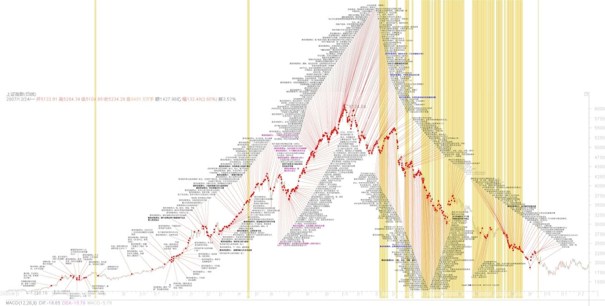
【网文】【缠中说禅】缠论如何入门
(2017-05-04 11:18:14)
学习任何一门理论，首先是态度，然后是勤奋，再次是实践，除此之外别无良径。
就缠论而言，缠论本身是捷径，但是将缠论学为己用，没有任何捷径可走。
“自从一读缠理论，不看人间糟粕书”，这句话原是说《楞严经》的。学习，最终有个目标，对一般人而言，学习缠论的目的就是在股市赚钱，而400多年来无数的先人发明或发现了无数所谓的赚钱理论，穷经皓首无疑是不现实的，那么对正确道路的选择就显得尤为重要，在这些所有的理论中，缠论通向目标的道路是最短的，所以说缠论是捷径。但任何道路都需要设立目标的人自己去走，一步一个脚印的攀登，这没有任何捷径可说。
此外，任何理论的学习最忌讳死记硬背，而是要理解理论背后的成立基础，也就是理论的根，把握住了根，就相当于武侠小说中打通了任督二脉，任何招式学的都很快。
比如说缠论，背驰的本质在于任何股票的筹码是有限而不可随意变化的，三买的本质在于突破后回抽力度的大小等等，其实这些在《图解缠论》书中都有阐述。
初学者，首先要研究的是缠论的原文，原文包含以下几个方面：108课理论原文、所有回复、所有解盘、所有原文中涉及到的股票进入点。比如说在某课中讲第三买点，特别提到了十多只股票，并强调这些股票都是从第三买点起来的，作为学习者，看到这里的第一件事，就是想办法把这十多只股票当时的K线图全部找出来，不仅要找日线，更要找次级别30分钟线与次次级别的5分钟线，因为基于缠论的任何分析都应该是三个级别配套的。举例来说，某个三买图形的日线、30分钟线、5分钟线找出来了，然后干嘛？三买是突破中枢的后的回抽，那么突破时的30分钟向上的走势与前一个向上的走势有什么不同？回抽在30分钟上是何种形态？回抽的结束在30分钟与5分钟图上分别有何特征？当时的大盘走势如何？个股与大盘的联系如何？这都是需要考察的知识点，而且这些知识点并不是缠论直接告诉你的，而是在缠论的知识体系中涉及到的，这就是学习的主动性。
勤奋就不用说了，但要强调，这种勤奋不是时断时续的，而是连贯的。比如说应试教育的高考，任何高分学生都不太可能把集中的一年拆散为4年，每年学习3个月而能有更好的成绩，这种长期、连贯的学习培养的是最重要的思维习惯，这种思维习惯的养成，对运用理论知识的帮助是非常大的。
认定了一种理论，就应该尽可能的把思考问题的方式转换过来，缠论的思考方式就是清晰的逻辑化分析与完全分类的思想，也只有拥有了这种思考习惯，才能更好的运用缠论的术。
比如说某股票当前已经形成一个30分钟中枢，那么以缠论的思考模式进行后续走势的分类：
一、不突破现有中枢
1、延续30分钟中枢但不超过30分钟级别
2、延续30分钟中枢且超过30分钟级别
二、突破现有中枢
1、向上突破
2、向下突破
以上，就把30分钟中枢后的走势完全分类了，这时，缠论中关于中枢、中枢扩展、第三买点、第三卖点的各种定义就是用来辨别这些变化的知识点。所谓系统性的学习、系统性的应用，就是如此。
学习，是一门实证的学问，理论一定要结合实践才有用处。思维习惯的养成与知识点的谙熟，最终都要通过实践来融入到你的操作模式中，比如说小时候学习乘法表与加减乘除，这是理论的学习，四则混合运算就是这些理论在实践中的运用，运用的规则就是加减乘除。通过实证，可以收获两种能力，一是理论的使用，二是操作习惯的养成。
理论的使用，也就是缠论理论在实际操作中的应用，任何股票的任何一次分析，都是数量掌握缠论的过程，学习前期可能需要一个个中枢画出来以容易辨别走势类型与级别，后期熟练了，一眼看过去，整个结构就能了然于心，这就是熟能生巧的过程。
操作习惯的养成，这个真的是有感应的，某一种买点成功操作的次数越多，这种感应就越强烈，直至最后不看到这种买点就不操作，一旦操作必然盈利，这也不是很困难的事情，只是需要一次次的重复而已。韵律，就是这样形成的。
最后想说的是，学习这种事情，和资质没什么关系，和方法对与否、勤奋与否才有直接关系。比如学佛，任何一个正常人都可以在名师的指导下按照既定程序，一步步的修炼成不正常的人，也就是所谓神通等等，这本身并没有什么很神奇，但任何人都需要经过几十年如一日的修炼而已。
(2013-03-25 10:24:32)
今日开博，简单聊聊哪些人适合学习缠论
学习缠论，是一个从自悟到自醒的过程，最终能学到什么程度，跟人的性格有很大关系，内向并且善于钻研的人是比较适合学缠论的，这样的人有一个比较通俗的称谓---技术流宅男，反之，外向并且善于交际的人，则不太适合。
但有人会说，事无绝对，人的性格是会改变的，比如有的人，一开始喜欢交际，性格外向，在经历一些事情以后，性格会逐渐改变。这是完全有可能的，本博主就属于这一种人，其实用性格回归来解释，可能会更贴切。
本博主毕业以后为了在社会上立足，为了求生存，在职场上混了十年，那时候根本没有考虑过自己性格的问题，到最后，本博主发现越来越不适合在职场上混，越来越排斥职场的那些勾心斗角和应酬，后来，一个偶然的机会，接触到缠论，刚开始就有种相见恨晚的感觉，再后来，把缠中说禅经济学的559篇文章通读一遍以后，就毅然决定，辞职回家，潜心钻研缠论，做一个技术流宅男。
现在看来，本博主的这种转变，就是一种性格的回归，所话说，江山易改本性难移。
如今我很庆幸，当年的选择。
现在每天坐在电脑前，看盘、画线、写分析、写博客，至少这些事我从心眼里很喜欢去做，一点也不排斥，总之一句话：如果温饱能解决，就去干自己喜欢的事，猫吃鱼，狗吃肉，奥特曼打小怪兽。
希望来这里的缠友们，在学习缠论前，先想想自己是什么性格，省的将来半途而废，我这样给各位泼冷水，其实也不是说，不适合学缠论的人，就跟缠论彻底绝缘了，其实也不是，缠中说禅经常会说偷心不死，但也说过引用请注明出处，其实还是给不适合学习缠论的人留了后门的。
我也一样，我会在这里，不定时的把操作贴出来，也会发操作建议，但是如果引用，也请注明出处。任何未经授权的引用、抄袭，均属侵权，一经发现，杀无赦，斩立决！
(2013-12-01 16:22:37)
总结一下缠论学习的正确方法，让后来者少走点弯路
最近在群里，发现一个问题，就是有些初学缠论的人，喜欢抓住一个问题一直问，问到最后，出来n个答案，最后把自己搞晕了。之所以有n个答案，是因为每个人的受教育程度、思考方式、学习经历和性格等方面都有差别，所以对缠论的理解就会有差别，这很正常。
还有就是前面文章里的很多问题，都是可以在后面文章中找到答案的。所以没有必要非得把一个问题彻底搞懂再往后看。
缠论是以博文的形式写成，自然缺少了一般教科书那样的循序渐进和严谨的编排。如果没有好的学习方法，很多初学者就会不得要领，事倍功半。
我在这里说说我个人认为比较正确的学习方法，供大家参考，后来人如果有更好地方法，也请不吝赐教。
第一步：是要选择一版好的教材。第一选择当然是看禅师的博客，这是对他最起码的尊重。但是有时候遇到不方便上网看博客或者需要记录的情况，就需要找一个别人整理好的教材来看，关于这个教材，我要重点说一下：目前能搜集到的教材分为3类：
第1类：也是最好的，是看比较纯净的版本，就是尽量不添加批注和配图，只是把原博照搬过来的那种，这样能学到原汁原味的东西，比吃别人嚼过的东西更有营养。我在这里给大家一个比较纯净的版本，大家可以去我的网盘下载：http://pan.baidu.com/s/1CGUqw。
第2类：网上流传的有很多经过深加工的教材，虽然在学习的时候，便于理解，但是也有很大可能会跟着别人错误的思路走上弯路，到最后能不能绕得回来都很难说。这种教材尽量不要去看，如果真要看的话，最好是跟其他版本的教材对照着看。
另外在这里纠正一个误区，一部分人喜欢在淘宝上买纸质的资料学习，虽然是可以省的用电脑了，但是这种东西，跟电脑比，有一个很大的弊端，就是在找某一段话的时候，效率很低，可能要浪费很长时间翻书，但在电脑上的话，搜索一下关键词，马上就能找到想要的结果。
第3类：网上有一少部分是收费的缠论资料，这种东西根本就没必要看了，因为这种资料产生的初衷是为了赚钱，这明显是和禅师教大家缠论的初衷相违背了。所以我个人持坚决抵制的态度。试问如果这些人真的把缠论学好了，能够稳定盈利的话，还会去赚这些小钱吗？
第二歩：先把缠论108课的内容通读一遍，不用看回复，也不用记笔记，就当是看小说，走马观花就行。遇到看不懂的，就扫一眼跳过去。
等第一遍看完以后，你需要问自己一个问题：有没有勇气和毅力用一到两年甚至更长的时间继续学下去？如果有那就继续第三歩。如果没有，就只当是看了部小说算了吧。
还有就是有人问过我：要什么样的文化程度才能学懂缠论。我可以很负责的说。只要具备初中毕业的文化水平，学习缠论就没有任何问题。
第三歩：开始第二遍认真学习，看这一遍要开始记笔记了，把书里面的各种定义、定理、原理之类的全部摘抄下来，而且每一课至少要读3遍，争取把每一句话的意思都理解。
如果一篇课文看了3次，还是有看不懂的地方，不要纠结，把问题记录下来，继续跳过去往后看下一课。
等第二遍学完以后，要适当休息一段时间，我当时休息了半个月。之所以要休息，是要静下心来，为下一遍精读做准备。
第四歩：开始第三遍学习，这一遍要精读+精画，所谓精读，就是要把每一课的内容完全理解，同时要重新记笔记，不光要把定义和定理摘抄下来，同时还要把你觉得比较重要的段落和语句全部摘抄下来，以便将来温故而知新，并且还要去解决第二遍学习过程中遇到的问题，在这一遍学习的过程中，每一课的阅读次数不限，直到彻底看懂为止，我当时看到29课的时候，这一篇课文反复阅读了不下50次。
所谓精画，就是要把课文里能够用画图来表达的段落，都自己亲手画出来。在这里，我把我当年画的图整理出来，大家可以做一个参考，下载地址：http://pan.baidu.com/s/13T5iZ，这些图仅仅是让大家参考，不保证完全都对，如果想把缠论学透，必须要按自己对课文的理解亲手去画。
我这里有一个课程表，编排的非常科学，建议大家第三遍学习的时候，按照这个课程表的顺序去学习。下载地址：http://pan.baidu.com/s/1NoAv，这一遍学完以后，继续休息半个月。
第五步：开始第四遍学习，这一遍主要是复习和整理思路，还是按照上面那个课程表的顺序学习就行，把第三遍时画的图重新和108篇文章整体进行对照，把以前图里面理解有偏差的地方改过来，最后自己要能把整个缠论的框架大纲给画出来，这样就基本算是学习完成了。然后可以进行最后一步。
第六步，学完了以后，就是运用的问题了，要根据自己的交易时间，资金量，反应速度，性格等因素，建立自己的交易系统，如果能把以上步骤学完，那恭喜你，应该算是毕业了。
但交易系统不可能是一成不变的，每隔一段时间，都要根据市场的节奏和自己的节奏，做相应的调整，一个科学的交易系统不一定能保证挣很多钱，但一定能保证不赔钱。
最后送各位一句话，一定要用没有任何期限、没有任何压力、即使赔了也不影响生活的钱去做交易，这样才能有一个好的心态，稳扎稳打，步步为营。
【网文】分享一下我的交易系统
(2013-04-07 17:20:25)
我的股票交易系统
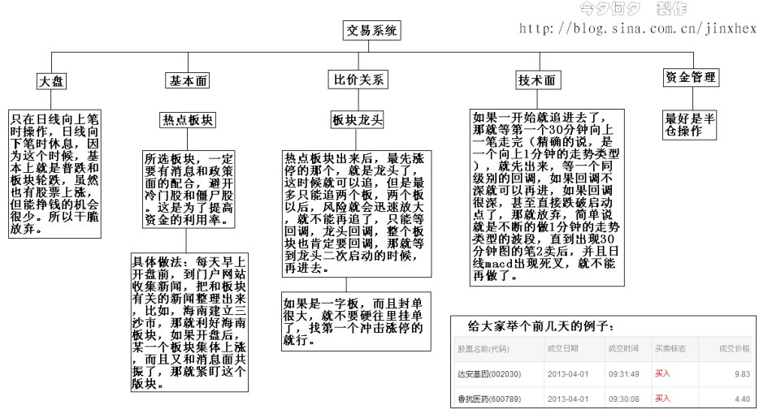
本来打算写一篇文章，但后来想想，有图有真相，所以最后就成这个样子了，这样也好，一目了然。
我这只是抛砖引玉，把我的思路分享给大家，重点是交易系统的建立，并没有让大家按照这个去操作的意思，当然，没有一定的功力，想按这个操作，难度也是很大的。有时候机会可能就那开盘后的几秒钟。
别的我也不多说了，能从这个图里悟出多少东西，那就看个人的悟性了。
(2014-06-07 23:06:20)
“一根筋思维的心理基础，就是企图找到一个永恒固定的公式，然后不管任何情况，只要套进去，就有一个现成答案。这种思维，把世界看成一个精密的机械，任何的运行，都等价于起点-结果模式，只要起点相同，就有相同的结果。这就是典型的一根筋思维。有些人，学本ID 的理论，本质上就是希望找到这样的东西，却不知道，法成则人成，人不成，法何成？”——缠中说禅。
最近有人对我的交易系统很感兴趣，让我写写，其实真没什么好写的，我现在的系统，跟一年前没什么大的变化，依然是主做各级别的2买卖点，那我这次就索性把一些过去比较零碎的东西整理整理吧。
首先先给各位泼一盆冷水，上面这段话，我想大家都应该很熟悉，但是很多人都没往心里去，仅仅是看过而已。一个好的交易系统，并不是一成不变的，而是应该根据使用的人量身定做。所以想拿我的系统直接去复制的人，那你现在就可以放弃了，该干嘛干嘛去。。。如果你的技术够好，对1买的判断很准确，那就干1买，如果技术一般，1买拿不准，那就干2买，这些都是比较基本的东西，我就不多说了。如果连怎么找1买和2买都不知道，那就去看那108课，看懂了再来看我这篇文章。
我今天要说的重点，是制定交易系统的基本原则，一个交易系统，是由多个交易条件组成的，如果你的交易系统中，只有对买卖点的判断，那是远远不够的，那就等于是在市场里裸奔。下面我就把我交易系统里的其他辅助交易条件写出来，并逐一说明：
1、 仓位控制：每一单的仓位控制在总资金量的10%以内，状态不好的时候仓位再减半。这样可以保证你在判断错误的情况下，能够有足够的空间，有条不紊的去锁仓或者是补仓，连禅师当年，也会留一部分大米作为机动，那我们有什么理由不照做呢？
2、单数控制：持仓最多不超过两单。单子开得太多，就会眼花，脑子就会跟着乱，而且在买卖点出现，需要你操作的时候，你可能是来不及去处理的。
3、风险控制：2买处开单后，止损设在1买，如果判断正确，后面第二段高点突破第一段的高点，那就把止损移到成本处，先保证不赔钱再说。这一点是非常重要的，我见过有很多人都是把挣钱的单子最后做成赔钱的，那样非常影响心态。
我曾经把自己将近半年的单子做过一次统计，大概比例如下：十单里面，有2单是开单后直接扫止损，赔点小钱，有5单是挣钱后把止损调到成本后被扫，挣点小钱，只有3单是挣的比较多，手动平仓的。另外也会有赔的比较多单子，但是100单里面，只有两单，这两单都是在做得比较顺的时候，得意忘形的结果。我去年能从300美金做到3000以上，很大程度就是这个风险控制程序在起作用。另外有人会问，2买开单，怎么会失败呢？那就看下面这段话吧。
“而对于上一章所说的第二个买点，一旦该缠绕中出现跌破前面男上位的最低位，就意味着买入程序出现问题，必须在任何一个反弹中把股票出清，在这种情况下，不排除后面出现上涨，但理由如上，任何操作，没有百分百准确的，一旦出现特殊情况，一定要先退出来，这是在投资生涯中能长期存活的最重要一点。当然，有经验的人，即使退出，也会按部就班，很有秩序，这和打仗是一个道理，一发现战机不对，就要撤，不能硬抗，否则不给灭了才怪了。”——缠中说禅。
4、成交量辅助判断：在买卖点附近的时候，如果1分图突然出现比较大的成交量，那就果断下手干。依据如下：其一大资金进场都是要追求利润的，其二大资金背后通常都是大的分析团队，也就是说大资金在一分钟内，冲进市场，然后又马上撤出市场的概率是非常小的，因为那样几乎没有利润，另外再加上在买卖点附近放量，说明大资金的看法跟你一致，那为什么不干呢？但这个条件只限于1分图，切记！要问为什么，那就自己去想。。。
5、macd辅助判断：如果是2买的话，最值钱的2买就是macd从0轴之下上穿0轴后回抽形成金叉的时候。再次引用原文作为依据：
“一个完整趋势过程中，MACD的形态：一个标准的两个中枢的上涨，在MACD 上会表现出这样的形态，就是第一段，MACD 的黄白线从0 轴下面上穿上来，在0 轴上方停留的同时，形成相应的第一个中枢，同时形成第二类买点，其后突破该中枢，MACD 的黄白线也快速拉起，这往往是最有力度的一段，一切的走势延伸等等，以及MACD 绕来绕去的所谓指标钝化都经常出现在这一段，这段一般在一个次级别的背驰中结束，然后进入第二个中枢的形成过程中，同时MACD 的黄白线会逐步回到0 轴附近，最后，开始继续突破第二个中枢，MACD 的黄白线以及柱子都再次重复前面的过程，但这次，黄白线不能创新高，或者柱子的面积或者伸长的高度能不能突破新高，出现背驰，这就结束了这一个两个中枢的上涨过程。”——缠中说禅。
6、三级联立辅助判断：这个书里也有说过，具体哪一课说的记不太清了，大概意思就是本级别出现买卖点的时候，高一级别的走势在干什么，次级别的走势在干什么，这些都要综合考虑进去。
7、比价关系辅助判断：黄金和欧元是有相关性的，虽然这种相关性不是100%，但也不能一点也不考虑，特别是在公布重要数据的时候，这个需要参考一下。
我设置的条件基本就这么多，但不是每次全部满足才会操作，而是根据条件满足的数量，来决定仓位的轻重，满足2条，就开5%的仓位，满足四条，就开7%的仓位，如果满足五条，那就10%的仓位，时间长了以后，你会发现，在该操作的时候，你放在鼠标上的手指会不由自主的点下去，这个禅师也说过，是培养出来的一种直觉，但这个直觉，是建立在技术基础之上的。是很科学的直觉。说了这么多，其实这些条件不光能用在黄金这一个品种上，只要稍加改动，股票，股指期货也一样能用
另外说一点，每次开单前，至少要把后面最坏的情况和相应的处理办法想清楚，这样的话，即使在意外，那也是在意料之中的了。
最后祝各位好运，交易上的事，当你技术达到一定的程度，就真没什么好说的了，自己多动动脑子吧。
【网文】现在的交易系统：
(2019-03-21 13:39:16)
从13年至今， 已经6年了，一直在专心研究操作黄金，无论是以前的外汇盘还是现在的国内期货盘，走势都没有太大的区别，跟朋友开玩笑的时候，他们说我做黄金都成精了，我认为，能把一个品种研究透，够了，实现财务自由只是早晚的事。不光从缠论走势层面研究，而且还从基本面研究（比如美国经济数据，央行政策），另外就是交易行为心理层面的研究（比如观察主力资金的动向，建仓和洗盘的手法）。简单来说，如果一个品种，你能知道什么时候有行情，什么时候没行情，什么时候有大行情，什么时候是小震荡，基本面政策往哪导向，主力机构怎么进场怎么洗盘，最后在用缠论去精确买卖点，那你就已经站在食物链的最顶端了。以上这些，都是从缠师三个独立交易系统里面延伸出来的东西。
再详细说一下缠论的交易思路，交易品种黄金期货，以四小时一笔为最低操作级别，尽量拿日线一笔，入场的时候从30分和5分钟的笔找精确买卖点。每周操作频率2到3单。遇到大的日线单边走势，一个单子拿一个月的情况也常有。遇到方向不明确，日线一直横盘震荡，连续休息一个月不做单的情况也有过。
仓位控制：6万初始账户，每次交易一单，大概三分之一仓位，之后看情况再加三分之一仓位的机动单，有好的机会可以用机动单做短差或锁仓。
目前这个系统已经用了大概一年的时间，账户总体波动比较平稳，能达到小赚，小亏，大赚兼有，并且能避免大亏的出现。交易的频率比较低，不用盯盘，每天白天隔几个小时看一眼就够了，晚上在家认真看两个小时，也不影响生活和休息，整个人的状态要比以前盯盘做短线好很多。
最后引用缠师的一段话来结束吧。
单纯停留在技术的层面，最多就是一个交易机器，最近即使能在市场中得到一定的回报，但这种回报是以生命的耗费为代价的。无论多大的回报，都抵不上生命的耗费。生命，只有生命才能回报，生命是用来参透生命，而不是为了生不带来、死不带走的所谓回报。——缠中说禅
趋势交易的奶爸
2016-09-14
感谢朋友们一直以来对奶爸的支持。中秋佳节将至，准备了一份小礼物送给大家：《国内最牛的炒股理论，“缠论”解读和实战应用》（上）。
（一）
“缠论”我曾潜心研读过，一直不敢怎么说。主要是学缠论的有些人，缠师的技术没学到，缠师的脾气全学去了，动不动骂人，我没必要自己找骂。现在很多朋友想听，奶爸对这“国内最牛的炒股理论”，简单说点体会。
缠师非常牛逼，是当年A股第一支百元股“亿安科技”的主操盘手。不过他其实只做了第一段，从几块炒到40多就退出了。另外，上证指数2007年10月大顶和2008年10月大底，他也有研判捕捉到。可惜天妒英才，英年早逝。
缠师最初用的ID是“喜欢数学的女孩”，言辞既污且狂，才华横溢。因为他本人比较传奇，加上缠论初稿写完，一些矛盾、晦涩的地方来不及修订就病逝了，读下来不容易理解，所以很多人认为缠论很神秘。实际上，缠论虽为独创，但也是站在前人肩膀上，有脉络可循的。只是有些人在学的时候，把握不住，钻进牛角尖，从而弄得复杂。
缠师在“教你炒股票”108篇的第一篇，一上来就说：“教你炒股票”这样的题目，全中国不会有第二人比本ID更适合写的。让人觉得牛皮要吹破天。但是，仔细看她（当时用的是ID是女孩）写的东西，确实很好，不由得一口气往下读。
缠论后半部分我读得不是最细，主要精研了前半部分，已经感觉受益良多。古人说，半部论语治天下。借用一下就是，半部缠论混股市。【韶山映山红】奶爸也不是完整的高维度缠论。】
一上来说这些，主要让朋友们对缠论先有个初步印象和大概认识：这是国内顶级实战派的经典佳作，理论自成体系，但也是有源之水，也没必要神化。这样，对我们学好、用好缠论，大有帮助。
（二）
缠师在“教你炒股票”108篇中，阐述过以下观点（红色字体部分为引用缠师原话）：
1.炒股就是为了赚钱。在资本市场中，没有慈善家，只有赢家和输家。而不会赢钱的经济人，只是废人！无论你在其他方面如何成功，到了市场里，赢输就是唯一标准，除此之外，都是废话。
这个宗旨非常重要、非常鲜明。很多人到市场为了快感，或者为了预测而预测、为了画线而画线，忘记了“赚钱”这个最本质的目标，忘记了自己的初衷。
2.不应该神化庄家。市场没有什么庄家，有的只是赢家和输家！所谓的庄家，前赴后继，尸骨早堆成了山。市场构成与资金实力无关，大资金死起来更快。
他说，有人炒股时，过于关心诸如庄家、主力之类的事情，就是走偏了。所以，我们更应该关注，股市给我们看到的一面。
3.不要借钱或用压力资金炒股。投资的第一要点就是“你手中的钱，一定是能长期稳定地留在股市的，不能有任何的借贷之类的情况”。不能把自己放置在一个危险的境地，所谓背水一战、置之死地而后生，都不是资本市场应该采取的态度。这样的态度，可能一时成功，但最终必然失败。一笔足够长的钱+加上本ID理论的熟练运用=战无不胜。
最后一句很狂，但前面说的很好。炒股，应该是先求败而不倒，而后求长期胜利。压力资金会导致我们短视、冒险，阻碍我们远见、布局，从而输在起跑线上。
4.不要用所谓的价值来安慰自己。任何不承认股票废纸性质的理论，都是荒谬的。任何股票，如果是因为有价值而持有，那都不过是唬人的把戏。长期持有某种股票的唯一理由就是，一个长期的买点出现后，长期的卖点还没到来。
缠师认为，股票只是合法博弈的载体，交易者的收益，只能来自于买卖的价差。这个认识非常透彻，直接决定我们在市场的行为，可以让我们避免一叶障目，或者被表面的纷纷扰扰所困扰。
5.市场有运行规律但不能预测点位。不学无术之辈，喜欢谈论所谓的点位，却不知道，点位只是基本形态演化的一个结果。
奶爸也一直认为，预测点位，只不过是装神弄鬼、哗众取宠的伎俩，既不靠谱，对交易本身也无帮助。比如从大的形态结构来看，指数波动差一两百点、运行时间差一两个月，并没有任何质的区别。但对于具体交易，带来的结果已是天壤之别。
6.不要相信股评推荐的股票。本ID不是股评，不会推荐什么股票，所以希望来本ID这里知道什么具体股票的，就不要浪费时间了。试想，真有本事的人，挣钱都忙不过来，怎么会当股评。本ID这里，股票只是其中一个小项目，只是希望来这里的人也学会怎么挣钱。所谓六艺，不会挣钱，在经济社会里还算人吗？
高手可以在市场实现长期稳定盈利，但对于单支股票，进场后仍然不得不面对“对”与“错”两种可能。既然这样，给出的所谓目标价，自然也流于扯淡。所以，和前一条一样，推荐个股和预测点位，难免有点自欺欺人。
7.交易最终比的是人性。交易市场存在的基础，就是人的贪婪与恐惧，如果所有参与交易市场的人都没有贪婪与恐惧，那市场就没了，资本主义就没了，货币就被消灭了。投资市场最终比的是修养与人格及见识，光从技艺上着手，永远只能是匠人，不可能成为真正的高手。
一些学缠论的人，自以为是，到处乱喷。所以，看到这些人根本无需和他们争辩，就知道他们缠论肯定没有学会，交易也不可能真正做得好。
（三）
缠论对趋势交易的理念和方法，有着深刻的理解和独到的运用。
1.缠师认为走势反映一切。一切基本面、消息面等的分析，最终都要落实到走势上，要让实在的钱来说话，否则都是自渎而已。只要有钱的运动，就必然留下轨迹，必然在走势上反映出来。
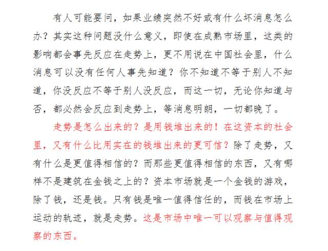
经典趋势交易理论建立在三大假设基础上：一是市场行为反映一切信息；二是价格沿趋势波动；三是历史会重演。缠师这里说的是第一个假设。
2.缠师讲究择时，等待合适的市场时机。对于本ID来说，这股票市场就如同提款机，时机到了，就去提款，时机不到，就让他搁在那。市场就如同男人，整天管他就会犯贱，就会咬你。所以男人不能经常搞，这市场也一样，必须耐心等待他的骚动，他不骚动，是不能搞的。
他还说，2001年6月后，就从未看过股票，直到2005年6月。
他远离股市的四年，刚好是A股慢慢熊途的四年。能够这么长时间远离股市，放弃捕捉其中的小波动，甚至中级行情，反映了缠师的大视野和大格局。单凭这一点，已是万里无一的高手。奶爸的交易理念也是，没有大行情就坚决休息。有些人长期在市场的小波动里进出，还自称缠论高手，岂非笑话。
3.缠师讲究顺势。投资市场里，这“早泄”的比例和市场总体强度有关，在熊市中这比例至少是80%以上，而牛市中这个比例就小多了，大概就30%。无论是选一个好面首还是一个好股票，把“早泄”的一类给筛出去可是最重要也是最困难的一步，很多所谓的高手，就死在这一步上。
这一点无需赘述，只有大势好的时候，交易成功率才高。
4.缠师讲究止损和资金管理。那么，如何甄别“早泄”男？首要的就是严格的资金管理，一旦出现“早泄”现象，必须马上退出，即使下面突然又不“早泄”了，又强力高潮了，也必须这样干。
他说，而且“早泄”特敏感，一个偶尔的因素就可能导致，而要重新再来，还要等待一个长的不应期，一个长的调整过后，即使会高潮不断，也浪费了时间，有这时间，可搞的东西多了去了，这世界又不只有一个面首、一只股票。
缠师在这里提到了，不止损即使后面解套了，也付出大量时间成本。很多人只看到死扛能够解套甚至还能赚钱，忽略了时间成本这个重要因素。
5.缠师讲究持盈。一只股票涨起来千万别随意抛了，中线如果连三十天线都没跌破，证明走势很强，就要拿着。
他说，“大牛不用套！”， 如果错过了节奏，就要在回档的时候跟进强势股票。散户就怕跌，但牛市里，跌就是爹，一跌就等于爹来了，又要发钱了。
这两句话多么清晰。说的就是趋势交易中，最经典的持盈。一方面，至少要拿到股票跌破某根中期均线才能卖（根据你自己操作周期的大小）；另一方面，指出了“多头市场逢低买进”这一简单有效的趋势交易策略。【韶山映山红】做趋势的人看到的是“持盈”和“多头市场逢低买进”。实际上是，筑顶出三卖才完全清仓退出，在此之前都是不同级别的分仓短差操作。】
6.缠师讲究跟随趋势，少看指标。对于水平高点的人来说，一个带均线和成交量的K线图，比任何技术指标都有意义。最简单又最实用的技术指标系统就是所谓的均线系统。
缠师用5日线和10日线组成的双均线系统做了举例：对于5日、10日的均线系统来说，5日在上就是女上位，反之就是男上位。【韶山映山红】这段解读不准确。原文没有明确说清楚体位的定义和界定，但是不能理解成5日在上就是女上位，反之就是男上位。】把短期均线当成是女王，长期均线当成面首，那么“男上位”意味着空头市场，而“女上位”意味着多头市场，要赚钱，就要多来点“女上位”。
用趋势交易的语言简单翻译，就是：多头市场做多。然后缠师在这里说到三种吻：飞吻、唇吻、湿吻。
其中的湿吻，其实就是长期震荡。简单理解：第一波强劲上涨后，一段时间震荡横盘后开启第二波。
缠师的原文说得很清楚：女上位趋势出现的第一次缠绕是中继的可能性极大，如果是第三、四次出现，这个缠绕是转折的可能性就会加大。意思就是：牛市中第二波大胆做。【韶山映山红】说牛市中第二波大胆做，实际上先假设了是牛市，而且是三、四波的牛市。显然与缠师谨慎的描述相违背。】
缠师还说：出现第一次缠绕前，5日线的走势必须是十分有力的，不能是疲软的玩意，这样缠绕极大可能是中继。实际上就是找强势股的第二波。
缠师又说：对于刚脱离底部的股票，第一次的高潮就如同一个淫乱狂欢夜的序幕，只不过是为第二、第三、第四、第五、第六、甚至第10次高潮进行铺垫。第一次高潮后的不应期往往不长，但可能很猛烈，震荡很激烈，不应期中还有继续高潮的冲力。这种股票，就如同刚被开发的面首，只有第二、三次，甚至第四、五次的高潮才会渐入佳境。
这就是为什么奶爸经常对于底部起来的股票，第一波不做的原因。因为知道只是前戏，高潮在后面。如果单从结果看，交易最高效的方式，是直接撩高潮。当然，如果你要享受其中上上下下、反反复复的过程例外。
这些内容主要在“教你炒股票”第11篇：《不会吻，无以高潮！》。这章非常经典。
7.缠师为趋势做出了清晰的定义。任何级别的所有走势，都能分解成趋势与盘整两类，而趋势又分为上涨与下跌两类。
【韶山映山红】作为整个缠论的解读，还沿用这个定义，而不是中枢基础上的定义，就把缠论降维了。】
缠师在这里讲到了全书最最牛的一句话：走势终完美。（原文在“教你炒股票”第17篇）
“走势终完美”这句话有两个不可分割的方面：一方面，任何走势，无论是趋势还是盘整，在图形上最终都要完成；另一方面，一旦某种类型的走势完成以后，就会转化为其他类型的走势。
这是让奶爸交易生涯顿悟的一句话。围绕这句话最简单、最直接的应用，将在《国内最牛的炒股理论，“缠论”解读和实战应用》（下）阐述。
另外，缠师在说趋势时，提出了“缠中说禅走势中枢”，用于寻找买点非常有意义。也将在《国内最牛的炒股理论，“缠论”解读和实战应用》（下）进行说明。
8.缠师认为所有股票没有什么区别，都只是用来交易的目标。股票只有两种，能干的和不能干的。和其他无关。男人只有两种，能搞的和不能搞的；市场也只有两种，能搞的和不能搞的。必须坚持的是，不能搞的就无论发生什么情况都不能搞，除非能达到某种能搞的标准而自动成为能搞的对象。
他说，对股票不能有偏见。你的喜好，就是你的死亡陷阱！在市场中要生存，第一条就是在市场中要杜绝一切喜好。
他说，对抛弃的股票一定不能有感情，股票就像男人，玩过就扔，千万别有感情。市场无须分析，只要看和干！
这些内容，和前面的观点“不要用所谓的价值来安慰自己”异曲同工。主要在“教你炒股票”原文第5篇。这篇对我影响也很深，以至于很长一段时间，我的签名档一直是：交易就是看和干。
股票不是拿来想和猜的，是拿来看和干的。
9.缠师对波浪理论也很有研究。他说，股票最多做第三波，不做第四波。
奶爸的理解，他说的应该是周线级别的。那么在波浪理论中，第三波上涨，是第五浪，随后就可能是下跌浪了。因此，虽然缠师认为波浪理论实战效果很差，但也有认同的地方。【韶山映山红】说缠师认可波浪，就谬之千里了。】
最后，缠论中还有不少可以直接拿来抓牛股的应用。比如买点、卖点、空头陷阱、背驰判断等，都将在《国内最牛的炒股理论，“缠论”解读和实战应用》（下）为大家奉上。敬请期待！
趋势交易的奶爸
2016-09-21
中秋假期时编写了《国内最牛的炒股理论，“缠论”解读和实战应用（上）》（点击标题可直接查看），简要解读了缠论的主要理念、观点。这次下半部分，主要说说用缠论来寻找个股买卖点的犀利运用。（以下红色字体部分为缠论原文）
1.缠论直接告诉了大家三个清晰买点。
（1）两类买点是关于长线的。缠师说：有一种方式是最简单的，就是盯着所有放量突破上市首日最高价的新股以及放量突破年线然后缩量回调年线的老股，这都是以后的黑马。特别那些年线走平后向上出现拐点的股票，一定要看好了。至于还在年线下面的股票，先别看了，等他们上年线再说。其实，这就是在牛市中最简单可靠的找所谓牛股的方法。
这里要特别说明下，在缠师那个时代，新股上市第一天没有涨跌幅限制，绝大部分会遭到爆炒，从而形成一个很多年也无法逾越的高点。其中最著名的是中国石油，2007年上市第一天开盘，把很多股民套在48元巅峰，这个价格至今遥不可及。
现在新股因为管理层人为压低发行价格，并且设置了首日44%的涨跌幅，一般都是上市交易后连续涨停，不会再出现以前那样的情况。但是，缠师说的这个道理仍然可以变通运用：重点关注第一波连续拉升结束，后面经过充分调整（至少10-12周以上），股价重新放量创出新高的次新股。
上面粗体字是第一个买点。那么第二个买点，我简单给大家看张图：
红圈的位置值得好好回味，完全可以直接拿来就用，按图索骥（特别是当时年线已经走平上翘）。其中，图二是从画趋势线的角度对图一进行注解，一个标准大周期的“趋势转折”。再次说明缠论对趋势交易有深刻理解。
（2）还有一个买点是关于中线的。禅师说：综合上述，利用均线构成的买卖系统，首先要利用男上位最后一次缠绕后背弛构成的空头陷阱抄底进入，这是第一个值得买入的位置，而第二个值得买入或加码的位置，就是女上位后第一次缠绕形成的低位。
他说，站在该系统下，这两个买点的风险是最小的，准确地说，收益和风险之比是最大的，也是唯一值得买入的两个点。明白了这一点，任何不在这两个买点买入的行为都是不可以原谅的，因为这是原则的错误，而不是高低的区别。
以前解释过，“男上位”表示长期均线反压短期均线，是空头形态，“女上位”表示短期均线在长期均线上面，是多头形态。这样再画个图就比较清晰了：
两个红圈大致是缠师所说的，两个值得买入的位置，也可以直接拿来就用，按图索骥。第一个点可以理解为跌出中枢下轨快速拉回，第二个点可以理解为放量突破中枢上轨缩量回踩。提醒一下就是：盘整过程也可以要求至少10-12周，并且缩量明显。
很多人学缠论，以为学到这样买，就可以所向披靡，结果实战下来老是吃瘪，然后说缠论没用。其实，他们忽略了缠师重要一句话、一个重要前提：这就是在牛市中最简单可靠的找所谓牛股的方法。对，“牛市”。
2.缠论中直接告诉了大家两种清晰卖点。
禅师说：有一个抛股票的原则，分两种情况，一种是缓慢推升的，一旦出现加速上涨，就要时刻注意出货的机会；另一种是第一波就火暴上涨，调整后第二波的上涨一旦出现背弛或放巨量的，一定要小心，找机会走人。
他补充说：具体的操作是一个火候的问题，必须自己用心去体会，就像煲汤，火候的问题是没法教的，只能自己在实践中体会。
他的原文已经把卖点说得很清楚，火候这里我说些体会供大家参考：
两种卖点的本质都是“加速冲顶”。一般如果做日线级别，冲顶过程中，三根长阳后可分批出货。或者，等待出现长阴（甚至跌停），再往上试图收复时卖。这种，大概率能卖在阶段性高点。
当然，这些都只是大概率，如果你想每次非要卖在最高点，缠师也帮不了你，奶爸的体会也会让你有时放牛。
3.“走势终完美”的最简单直接应用。
这里先重复一下缠师对“走势终完美”的解释：“走势终完美”这句话有两个不可分割的方面：任何走势，无论是趋势还是盘整，在图形上最终都要完成。另一方面，一旦某种类型的走势完成以后，就会转化为其他类型的走势。
这句话看起来平淡无奇，仔细想想真是实用：
（1）一旦上升趋势确立，就可以找机会介入，耐心等待它持续下去，直到走完（寻找放量强势上涨缩量回调后再次拉起的票）。这就是趋势在图形上最终都要完成的意义，俗称“趋势中继”。
（2）一个盘整的走势到最后必定衰竭，然后不可避免地产生上涨或下跌（寻找长期盘整并且k线和成交量逐渐收敛的票，等待它向上脱离时介入）。这就是转化为其他类型的走势的意义，俗称“趋势转折”。
回头想想，缠师说牛市买“放量突破年线然后缩量回调年线的老股”，就是“走势终完美”的一个经典运用：股票长期下跌后，出现转折迹象，因为“下跌”走势已经“完美”，随后只会产生“盘整”或者“上涨”两种走势，多么值得去赌！
另外，为了解释“走势终完美”，缠师提出了“中枢”的概念：某级别走势类型中，被至少三个连续次级别走势类型所重叠的部分，称为缠中说禅走势中枢。
不少朋友觉得这句话很难理解，我省去推导过程，说个大致理解：“走势中枢”可以简单理解为“成交密集带”。下面画一张图简单说明，顺便让大家体会下“中枢”和“箱体”的区别：
实战中，股票盘整结束，放量突破中枢就可以买入，而不必要等到突破箱体。突破箱体往往已经过了最佳买点，随后如果遇到调整，买入的成本价容易被再次击穿。
假如股票买入后，涨了百分之十几再回调到成本价。不卖的话，万一再跌，曾经赚那么多最后亏钱，难以接受；卖了的话，又可能刚好回调结束再次拉起。这样会变得非常难以决策。用突破中枢买入，效果好很多。
这是运用中枢买股非常重要的一个意义。
4.“空头陷阱”的简单判断和应用。
缠师的原文是：在“男上位”的情况下，一旦出现湿吻，就要密切注意了，特别是这个湿吻是在一个长期“男上位”后出现的，就要更加注意了，其后的下跌往往是介入的良机，因为空头陷阱的概率简直太大了。
我还是继续画图说明（为了简洁，我直接把均线省掉了，反正现在大家已经理解，男上位就是下跌，湿吻就是盘整）：
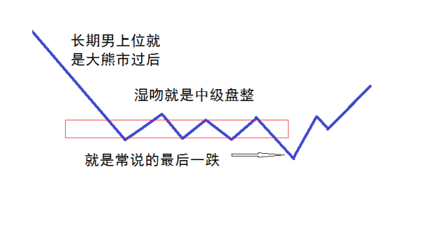
概括起来大致是：长期下跌趋势结束，形成盘整走势，如果再破位下杀，容易出现空头陷阱。也就是平时大家常说的：最后一跌。这时候往往是市场比较恐慌的时候，却往往酝酿着机会。
5.“背驰”的简单判断和应用。
缠师说：如何判断“背驰”？首先定义一个概念，称为缠中说禅趋势力度：前一“吻”的结束与后一“吻”开始由短线均线与长期均线相交所形成的面积。在前后两个同向趋势中,当缠中说禅趋势力度比上一次缠中说禅趋势力度要弱，就形成“背驰”。
两根均线交叉形成的面积，画图很直观。这个图画起来比较简单，奶爸不画了，当作一个小作业。大家自己可以随便自己画画玩玩。
你要是偷懒不想画，直接看MACD指标两条线交叉形成的面积，大致也差不多。
那么通过MACD指标还有种办法可以判断背驰：比如股价不停上涨，MACD的红柱子却不再越来越长；或者是股价不断下跌，绿柱子却不再越来越长。
这里特别提醒的是：背驰实际反应的只是“超买”或者“超卖”，代表了一种概率，并不是说背驰就一定会很快转折。大牛市中的超买有时会持续很长时间，大熊市中的超卖有时也会持续很长时间。我们看台基股份的一段周线图：
这段走势，股价一路下跌，斜率基本没有变化，但是MACD绿柱却一次比一次短，形成背驰。这个背驰持续时间较长，假设你半路买入，后面还要被套好几个月。
实战应用大致就说到这里。
有些缠迷可能觉得很诧异，怎么奶爸一点都没说笔画、线段、分型这种，不说这些东西还算缠论么？
答案是，这些奶爸真不会，不会的东西不能拿出来乱说。而且我一直觉得，缠论理解透彻前面半部，已经够用，后面这些，如果心法不到、基础不扎实，勉强去学，容易误入歧途，走火入魔。因此，不做科普，让高手们去研究就行了。
很多人就是画线画傻的。好好一部教人挣钱的缠论，他们学了却拿去画线。就好像某部电影里说的段子：好不容易摁倒一个美女，扯下内裤，却把内裤的橡皮筋抽出来做弹弓。
不许笑，谁笑用弹弓砸谁家玻璃！（全文完）
【网文】一生伏首！
(2012-01-10 00:08:25)
在日俄战争中击败俄军的日本海军大将东乡平八郎有一个著名的腰牌，腰牌上的字，稍微懂点历史的人都知道上面写的什么：一生伏首拜阳明！
我相信，几百年之后如果流行腰牌，一定会有人像这个日本鬼子一样，取得引人注目的成就之后，告诉别人：一生伏首拜缠师！
对历史稍微精深点的人都知道，王守仁作为三千年以来中国的除孔子之外的头号圣人，影响有多大。王守仁在历史上获得的推崇是有其思想力相配的。王守仁之后的明朝一代，包括之后中华文明没落的清代民国数百年的思想史，王守仁知行合一思想的地位和影响力，不可估量、无可匹敌。
我也相信，缠师虽然未满四十英年早逝，虽然其对于中国传统文化的构建没有来得及封顶，但是其留下的那一千多篇博文，已经能够能完成他的遗志了，唯一的遗憾是，博客终究是博客，虽然点击量持续上涨，知道缠师的人其实仍然是小众范围，研究、学习他思想的人更是有限。希望这只是我的猜想，更大的可能是，这些博文已经被极多的人抄了去，学习体会，N年之后，依靠思想的力量而有所成，然后再为宣扬缠论贡献更大的力量。佛能度人，也还需要船才好。
对于缠，对于缠的理论，语言所能表达的内容实在有限，最好的推广介绍当然不是开个补习班教授缠论，更不是搞个PPT到大街上去讲演，最好的方式仍然是学习博文本身。
问度娘关于缠中说禅有什么好东西，更多的是缠的身世的猜测，大家互相复制粘贴，其次是关于缠中说禅技术分析，一遍又一遍的将缠中说禅108课翻来覆去的颠倒顺序。谁来整理这浩繁的出世法与世间法，从而达到文化构建的目的呢？
缠论相对于世俗思想，出世法固然高深，却也平淡；相对于传统技术分析，固然复杂，却也平常。现在能做的，就是等学缠有所成的在电视上告诉大家，我是通过学缠才能取得如今的成就的，然后大家一窝蜂去学，然后各种分析各种传记开始流行。真的这样，反而是被曲解的缠，千年之后，是不是也会有人写一个系列《给所有曲解缠论的人》。
若真如此，那也是缘分吧！
本课目录
教你炒股票01：不会赢钱的经济人，只是废人！【网文】【缠中说禅】缠论如何入门【网文】今日开博，简单聊聊哪些人适合学习缠论【网文】总结一下缠论学习的正确方法，让后来者少走点弯路【网文】分享一下我的交易系统【网文】时隔一年后再写我的交易系统（黄金）【网文】现在的交易系统：【网文】国内最牛的炒股理论，“缠论”解读和实战应用（上）【网文】国内最牛的炒股理论，“缠论”解读和实战应用（下）【网文】一生伏首！